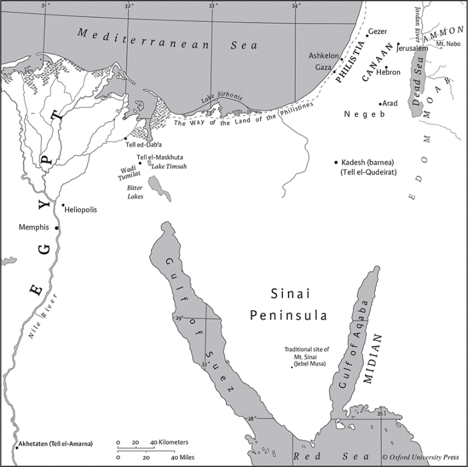
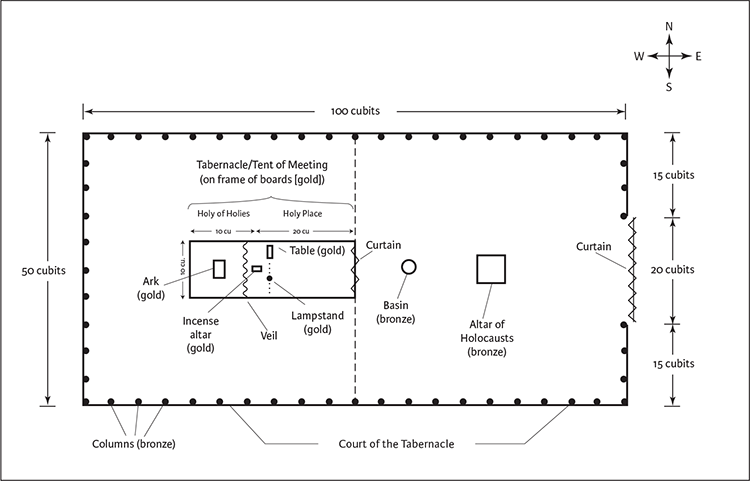
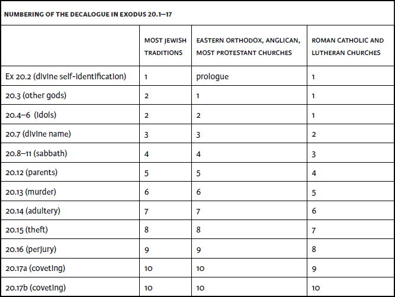

Exodus
Name
The English name “Exodus,” which derives from a Latinized abbreviation of the Greek title exodos aigyptou (“exit from Egypt”), highlights the storyline of the first third of the book. In keeping with the ancient practice of naming books after their opening words, the main Hebrew title is Shemot (“names”), taken from the book’s beginning (“These are the names”).
Canonical Status and Location
The second book of the Bible in all canonical traditions, Exodus is not an independent work but rather is an integral part of the Torah, or Pentateuch. Its opening verses connect it to Gen 46.8–27; and it closes with the completion of the tabernacle, the wilderness shrine that prefigures the Temple as a dwelling for the divine presence. Details of worship at that shrine dominate the next book, Leviticus; and Numbers and Deuteronomy continue the journey narrative.
Authorship
Authorship is traditionally ascribed to Moses, in part based on passages such as 24.4 and 34.27. Modern biblical scholarship, however, has noted many problems with the view that Moses wrote the entire Torah, including Exodus. Like the rest of the Pentateuch, Exodus contains contradictions and redundancies. For example, Moses’s father‐in‐law is sometimes called Reuel and sometimes Jethro; and the mountain of revelation is Sinai in some passages and Horeb in others. The narratives of Moses on the mountain in chs 19 and 24 have many overlapping and conflicting details, as does the account of the calamities—called “ten plagues” in postbiblical tradition but not in the Bible—against the Egyptians in 7.8–10.29. Differences in vocabulary, style, and ideas are also evident. Thus Exodus is best understood as a composite of streams of traditions shaped over many centuries by an unknown number of anonymous storytellers and writers. Eventually those traditions—often labeled J, E, D, and P according to critical biblical scholarship—were skillfully combined into the present canonical book by one or more redactors or editors who accepted these multiple traditions as valid. The redactor(s) or editor(s) can be credited with the overall interweaving of disparate materials—narratives, legal texts, priestly records, lists, and one long poem. Redaction also introduced or maintained patterns, such as the repetition of a thematic word or phrase a symbolic number of times (usually seven or ten) in a literary unit (see, e.g., 4.21n.; 5.1n.; 18.26n.; 40.16n.), and also the triadic arrangement of the account of the nine marvels (see 7.8–10.29n.).
Historical Context
The diverse materials in Exodus are situated within a story line describing the departure of a group of oppressed people from Egypt to a sacred mountain in Sinai where they enter into a covenant with the God they believed rescued them; then, at that God’s direction, they construct a portable shrine for their deity before continuing their journey. The historicity of that story has been questioned, partly because the literary strands comprising Exodus date from many centuries after the events they purport to describe. The events themselves, which involve the escape of a component of Pharaoh’s workforce, the disruption of Egyptian agriculture, and the loss of many Egyptian lives, are not mentioned in Egyptian sources (although the Egyptians would not necessarily record such events). Similarly, the larger‐than‐life leader Moses is not mentioned in contemporaneous nonbiblical sources; and no trace of a large group of people moving across the Sinai Peninsula has been found by archaeological surveys or excavations. In addition, features of the story—such as the signs and wonders performed in Egypt, the exceedingly large number of people said to have left Egypt (see 12.37n.), and the huge quantities of precious metals (e.g., ca. 2,482 pounds of gold; see 38.24) used to construct the tabernacle and other ritual objects—defy credibility. Virtually none of the places mentioned in Exodus, including the holy mountain, can be identified with sites discovered in Sinai or with names known from other sources (see 12.37n.; 19.1n.). Finally, the Exodus story culminates in the book of Joshua, with the conquest of the land of Israel; here too the archaeological record does not corroborate the main biblical narrative.
Despite these problems, the basic story line about the departure from Egypt fits broad evidence from Egyptian and other sources. Foreigners from western Asia, called “Asiatics” in Egyptian documents, periodically did migrate to Egypt, especially during times of famine (see Gen 12.10; 41.57; 43.1–2); others were taken to Egypt as military captives or were forcibly sent there as human tribute by Canaanite rulers. Moreover, many such groups, including those who voluntarily entered Egypt, were conscripted for state projects (see Ex 1.11–14). This pattern was especially strong toward the end of the Late Bronze Age (ca. 1400–1200 bce). And, although virtually all of the foreigners in Egypt were assimilated into local culture, there is at least one documented instance of several workers escaping into the Sinai wilderness. Thus the overall pattern of descent into Egypt followed by servitude and escape accords with general information in ancient documents. In addition, the end of the Late Bronze Age, by which time the Israelites would have left Egypt, coincides with the date of inscriptional evidence—a stele erected by Pharaoh Merneptah in ca. 1209 bce—for a people called “Israel” in the land of Canaan, the first mention of Israel outside the Bible.
A plausible reconstruction is that a relatively small group of people, descendants of western Asiatics who had entered Egypt generations before, managed to escape from servitude. So improbable was such an event that the people, or their leader, attributed it to miraculous divine intervention. This experience bonded them in their loyalty to that deity and gave them a collective identity. This story was originally oral and developed like other oral tales. Upon entering Canaan, they told their story and spread word about their unusual saving God, Yahweh, a name perhaps learned from Midianites with whom they interacted (see 3.15n.). Their stories about securing freedom are collective memories meant to re‐create for others the intense emotional experience of liberation rather than to record accurate details of their escape. As time passed, major features of Israelite culture—such as the main agricultural festivals (especially passover), the custom of redeeming firstborn males, the idea of a people in a covenant relationship with God, prophets as transmitters of God’s word, the sabbath, the construction of a central shrine as God’s earthly abode, a sacrificial system administered by priests—were assimilated into the core Exodus narrative, which gave them emotional power and authority (see 11.1–13.16n.). This commemoration of the past makes the experience of a few the collective story, the very identity, of the community taking shape and expanding in the highlands of Canaan and later struggling to survive the traumas of division and exile.
Literary History
The components of the book of Exodus have been so skillfully woven together that it often is not possible to reconstruct the process by which they emerged and were ultimately combined. The overall story comprises several traditions, perhaps related to the southern (Judean) J and northern (Israelite) E posited by biblical scholarship, that arose during the monarchic period, with the long poem of ch 15 likely an independent composition predating the narrative strands. Deuteronomic elements (D, usually linked to late monarchic developments) can also be identified; it is even possible that all three streams of tradition drew from a core commemorative account but developed it in their own particular ways. A strong P (Priestly) component is also present at the end of the book, in the passages dealing with the sanctuary, priests, and rituals, and in several points of the earlier story line, notably in the accounts of the marvels in Egypt and the deliverance at the sea. The final redaction reflects Priestly emphases of the sixth century bce or later but also preserves ritual and ceremonial practices many centuries older.
Structure
The book can be subdivided into thematic and literary units in various ways; this one positions the revelation at Sinai and the covenant in the center:
Part I: Israel in and out of Egypt (1.1–15.21): God sees Israelite suffering in Egypt (chs 1–2), Moses becomes God’s spokesperson (3.1–7.7), and a series of calamities (7.7–13.16), known in tradition as the “ten plagues,” culminate in the escape of the people (13.17–15.21).
Part II: Sinai and covenant (15.22–24.18): After traveling through the wilderness (15.22–18.27), the Israelites reach Mount Sinai, where they experience a theophany (a divine appearance, chs 19, 24), and receive the covenant (chs 20–23).
Part III: Sanctuary and new covenant (25:1–40:34): An episode of apostasy followed by covenant renewal (chs 32–34) separates instructions for building the sanctuary (chs 25–31) from the account of its construction (chs 35–40).
Interpretation
Exodus is arguably the most important book in the Hebrew Bible. It contains an explanation of God’s name YHWH and also fundamental biblical ideas about God, especially that God responds to and saves people who are suffering or oppressed. Major institutions of ancient Israel—such as prophecy, covenant, community regulations, a central shrine, festivals, sacrifice, and the sabbath—are grounded in the narrative of liberation. The Exodus story likely struck a resonant chord for Judeans experiencing defeat and exile in the sixth century bce and later; for them, maintaining or restoring the institutions set forth in Exodus contributed to their emerging identity and to their very survival as a dispersed people. A similar dynamic is true for subsequent Jewish history. Although the institutions of Exodus played a lesser role in Christian tradition, the concept of divine self‐revelation as manifest in Jesus Christ is rooted in the prominence of God’s self‐revelation in Exodus; and the story of suffering leading to redemption shapes key Christian beliefs. For both Jews and Christians, identification with the suffering in Egypt contributes to the moral imperative to alleviate the suffering of others. As a story of liberation, Exodus has infused hope into many peoples. Despite its many positive features, however, some aspects of Exodus—such as the loss of innocent Egyptian lives and the investment of community resources in an elaborate shrine—continue to trouble readers.
Carol Meyers
1 These are the names of the sons of Israel who came to Egypt with Jacob, each with his household: 2Reuben, Simeon, Levi, and Judah, 3Issachar, Zebulun, and Benjamin, 4Dan and Naphtali, Gad and Asher. 5The total number of people born to Jacob was seventy. Joseph was already in Egypt. 6Then Joseph died, and all his brothers, and that whole generation. 7But the Israelites were fruitful and prolific; they multiplied and grew exceedingly strong, so that the land was filled with them.
8Now a new king arose over Egypt, who did not know Joseph. 9He said to his people, “Look, the Israelite people are more numerous and more powerful than we. 10Come, let us deal shrewdly with them, or they will increase and, in the event of war, join our enemies and fight against us and escape from the land.” 11Therefore they set taskmasters over them to oppress them with forced labor. They built supply cities, Pithom and Rameses, for Pharaoh. 12But the more they were oppressed, the more they multiplied and spread, so that the Egyptians came to dread the Israelites. 13The Egyptians became ruthless in imposing tasks on the Israelites, 14and made their lives bitter with hard service in mortar and brick and in every kind of field labor. They were ruthless in all the tasks that they imposed on them.
15The king of Egypt said to the Hebrew midwives, one of whom was named Shiphrah and the other Puah, 16“When you act as midwives to the Hebrew women, and see them on the birthstool, if it is a boy, kill him; but if it is a girl, she shall live.” 17But the midwives feared God; they did not do as the king of Egypt commanded them, but they let the boys live. 18So the king of Egypt summoned the midwives and said to them, “Why have you done this, and allowed the boys to live?” 19The midwives said to Pharaoh, “Because the Hebrew women are not like the Egyptian women; for they are vigorous and give birth before the midwife comes to them.” 20So God dealt well with the midwives; and the people multiplied and became very strong. 21And because the midwives feared God, he gave them families. 22Then Pharaoh commanded all his people, “Every boy that is born to the Hebrewsa you shall throw into the Nile, but you shall let every girl live.”
2 Now a man from the house of Levi went and married a Levite woman. 2The woman conceived and bore a son; and when she saw that he was a fine baby, she hid him three months. 3When she could hide him no longer she got a papyrus basket for him, and plastered it with bitumen and pitch; she put the child in it and placed it among the reeds on the bank of the river. 4His sister stood at a distance, to see what would happen to him.
5The daughter of Pharaoh came down to bathe at the river, while her attendants walked beside the river. She saw the basket among the reeds and sent her maid to bring it. 6When she opened it, she saw the child. He was crying, and she took pity on him. “This must be one of the Hebrews’ children,” she said. 7Then his sister said to Pharaoh’s daughter, “Shall I go and get you a nurse from the Hebrew women to nurse the child for you?” 8Pharaoh’s daughter said to her, “Yes.” So the girl went and called the child’s mother. 9Pharaoh’s daughter said to her, “Take this child and nurse it for me, and I will give you your wages.” So the woman took the child and nursed it. 10When the child grew up, she brought him to Pharaoh’s daughter, and she took him as her son. She named him Moses,a “because,” she said, “I drew him outb of the water.”
11One day, after Moses had grown up, he went out to his people and saw their forced labor. He saw an Egyptian beating a Hebrew, one of his kinsfolk. 12He looked this way and that, and seeing no one he killed the Egyptian and hid him in the sand. 13When he went out the next day, he saw two Hebrews fighting; and he said to the one who was in the wrong, “Why do you strike your fellow Hebrew?” 14He answered, “Who made you a ruler and judge over us? Do you mean to kill me as you killed the Egyptian?” Then Moses was afraid and thought, “Surely the thing is known.” 15When Pharaoh heard of it, he sought to kill Moses.
But Moses fled from Pharaoh. He settled in the land of Midian, and sat down by a well. 16The priest of Midian had seven daughters. They came to draw water, and filled the troughs to water their father’s flock. 17But some shepherds came and drove them away. Moses got up and came to their defense and watered their flock. 18When they returned to their father Reuel, he said, “How is it that you have come back so soon today?” 19They said, “An Egyptian helped us against the shepherds; he even drew water for us and watered the flock.” 20He said to his daughters, “Where is he? Why did you leave the man? Invite him to break bread.” 21Moses agreed to stay with the man, and he gave Moses his daughter Zipporah in marriage. 22She bore a son, and he named him Gershom; for he said, “I have been an alienc residing in a foreign land.”
23After a long time the king of Egypt died. The Israelites groaned under their slavery, and cried out. Out of the slavery their cry for help rose up to God. 24God heard their groaning, and God remembered his covenant with Abraham, Isaac, and Jacob. 25God looked upon the Israelites, and God took notice of them.
3 Moses was keeping the flock of his father‐in‐law Jethro, the priest of Midian; he led his flock beyond the wilderness, and came to Horeb, the mountain of God. 2There the angel of the Lord appeared to him in a flame of fire out of a bush; he looked, and the bush was blazing, yet it was not consumed. 3Then Moses said, “I must turn aside and look at this great sight, and see why the bush is not burned up.” 4When the Lord saw that he had turned aside to see, God called to him out of the bush, “Moses, Moses!” And he said, “Here I am.” 5Then he said, “Come no closer! Remove the sandals from your feet, for the place on which you are standing is holy ground.” 6He said further, “I am the God of your father, the God of Abraham, the God of Isaac, and the God of Jacob.” And Moses hid his face, for he was afraid to look at God.
7Then the Lord said, “I have observed the misery of my people who are in Egypt; I have heard their cry on account of their taskmasters. Indeed, I know their sufferings, 8and I have come down to deliver them from the Egyptians, and to bring them up out of that land to a good and broad land, a land flowing with milk and honey, to the country of the Canaanites, the Hittites, the Amorites, the Perizzites, the Hivites, and the Jebusites. 9The cry of the Israelites has now come to me; I have also seen how the Egyptians oppress them. 10So come, I will send you to Pharaoh to bring my people, the Israelites, out of Egypt.” 11But Moses said to God, “Who am I that I should go to Pharaoh, and bring the Israelites out of Egypt?” 12He said, “I will be with you; and this shall be the sign for you that it is I who sent you: when you have brought the people out of Egypt, you shall worship God on this mountain.”
13But Moses said to God, “If I come to the Israelites and say to them, ‘The God of your ancestors has sent me to you,’ and they ask me, ‘What is his name?’ what shall I say to them?” 14God said to Moses, “I am who I am.”a He said further, “Thus you shall say to the Israelites, ‘I am has sent me to you.’” 15God also said to Moses, “Thus you shall say to the Israelites, ‘The Lord,a the God of your ancestors, the God of Abraham, the God of Isaac, and the God of Jacob, has sent me to you’:
This is my name forever,
and this my title for all generations.
16Go and assemble the elders of Israel, and say to them, ‘The Lord, the God of your ancestors, the God of Abraham, of Isaac, and of Jacob, has appeared to me, saying: I have given heed to you and to what has been done to you in Egypt. 17I declare that I will bring you up out of the misery of Egypt, to the land of the Canaanites, the Hittites, the Amorites, the Perizzites, the Hivites, and the Jebusites, a land flowing with milk and honey.’ 18They will listen to your voice; and you and the elders of Israel shall go to the king of Egypt and say to him, ‘The Lord, the God of the Hebrews, has met with us; let us now go a three days’ journey into the wilderness, so that we may sacrifice to the Lord our God.’ 19I know, however, that the king of Egypt will not let you go unless compelled by a mighty hand.b 20So I will stretch out my hand and strike Egypt with all my wonders that I will perform in it; after that he will let you go. 21I will bring this people into such favor with the Egyptians that, when you go, you will not go empty‐handed; 22each woman shall ask her neighbor and any woman living in the neighbor’s house for jewelry of silver and of gold, and clothing, and you shall put them on your sons and on your daughters; and so you shall plunder the Egyptians.”
4 Then Moses answered, “But suppose they do not believe me or listen to me, but say, ‘The Lord did not appear to you.’” 2The Lord said to him, “What is that in your hand?” He said, “A staff.” 3And he said, “Throw it on the ground.” So he threw the staff on the ground, and it became a snake; and Moses drew back from it. 4Then the Lord said to Moses, “Reach out your hand, and seize it by the tail”—so he reached out his hand and grasped it, and it became a staff in his hand— 5“so that they may believe that the Lord, the God of their ancestors, the God of Abraham, the God of Isaac, and the God of Jacob, has appeared to you.”
6Again, the Lord said to him, “Put your hand inside your cloak.” He put his hand into his cloak; and when he took it out, his hand was leprous,c as white as snow. 7Then God said, “Put your hand back into your cloak”—so he put his hand back into his cloak, and when he took it out, it was restored like the rest of his body— 8“If they will not believe you or heed the first sign, they may believe the second sign. 9If they will not believe even these two signs or heed you, you shall take some water from the Nile and pour it on the dry ground; and the water that you shall take from the Nile will become blood on the dry ground.”
10But Moses said to the Lord, “O my Lord, I have never been eloquent, neither in the past nor even now that you have spoken to your servant; but I am slow of speech and slow of tongue.” 11Then the Lord said to him, “Who gives speech to mortals? Who makes them mute or deaf, seeing or blind? Is it not I, the Lord? 12Now go, and I will be with your mouth and teach you what you are to speak.” 13But he said, “O my Lord, please send someone else.” 14Then the anger of the Lord was kindled against Moses and he said, “What of your brother Aaron the Levite? I know that he can speak fluently; even now he is coming out to meet you, and when he sees you his heart will be glad. 15You shall speak to him and put the words in his mouth; and I will be with your mouth and with his mouth, and will teach you what you shall do. 16He indeed shall speak for you to the people; he shall serve as a mouth for you, and you shall serve as God for him. 17Take in your hand this staff, with which you shall perform the signs.”
18Moses went back to his father‐in‐law Jethro and said to him, “Please let me go back to my kindred in Egypt and see whether they are still living.” And Jethro said to Moses, “Go in peace.” 19The Lord said to Moses in Midian, “Go back to Egypt; for all those who were seeking your life are dead.” 20So Moses took his wife and his sons, put them on a donkey, and went back to the land of Egypt; and Moses carried the staff of God in his hand.
21And the Lord said to Moses, “When you go back to Egypt, see that you perform before Pharaoh all the wonders that I have put in your power; but I will harden his heart, so that he will not let the people go. 22Then you shall say to Pharaoh, ‘Thus says the Lord: Israel is my firstborn son. 23I said to you, “Let my son go that he may worship me.” But you refused to let him go; now I will kill your firstborn son.’”
24On the way, at a place where they spent the night, the Lord met him and tried to kill him. 25But Zipporah took a flint and cut off her son’s foreskin, and touched Moses’a feet with it, and said, “Truly you are a bridegroom of blood to me!” 26So he let him alone. It was then she said, “A bridegroom of blood by circumcision.”
27The Lord said to Aaron, “Go into the wilderness to meet Moses.” So he went; and he met him at the mountain of God and kissed him. 28Moses told Aaron all the words of the Lord with which he had sent him, and all the signs with which he had charged him. 29Then Moses and Aaron went and assembled all the elders of the Israelites. 30Aaron spoke all the words that the Lord had spoken to Moses, and performed the signs in the sight of the people. 31The people believed; and when they heard that the Lord had given heed to the Israelites and that he had seen their misery, they bowed down and worshiped.
5 Afterward Moses and Aaron went to Pharaoh and said, “Thus says the Lord, the God of Israel, ‘Let my people go, so that they may celebrate a festival to me in the wilderness.’” 2But Pharaoh said, “Who is the Lord, that I should heed him and let Israel go? I do not know the Lord, and I will not let Israel go.” 3Then they said, “The God of the Hebrews has revealed himself to us; let us go a three days’ journey into the wilderness to sacrifice to the Lord our God, or he will fall upon us with pestilence or sword.” 4But the king of Egypt said to them, “Moses and Aaron, why are you taking the people away from their work? Get to your labors!” 5Pharaoh continued, “Now they are more numerous than the people of the landa and yet you want them to stop working!” 6That same day Pharaoh commanded the taskmasters of the people, as well as their supervisors, 7“You shall no longer give the people straw to make bricks, as before; let them go and gather straw for themselves. 8But you shall require of them the same quantity of bricks as they have made previously; do not diminish it, for they are lazy; that is why they cry, ‘Let us go and offer sacrifice to our God.’ 9Let heavier work be laid on them; then they will labor at it and pay no attention to deceptive words.”
10So the taskmasters and the supervisors of the people went out and said to the people, “Thus says Pharaoh, ‘I will not give you straw. 11Go and get straw yourselves, wherever you can find it; but your work will not be lessened in the least.’” 12So the people scattered throughout the land of Egypt, to gather stubble for straw. 13The taskmasters were urgent, saying, “Complete your work, the same daily assignment as when you were given straw.” 14And the supervisors of the Israelites, whom Pharaoh’s taskmasters had set over them, were beaten, and were asked, “Why did you not finish the required quantity of bricks yesterday and today, as you did before?”
15Then the Israelite supervisors came to Pharaoh and cried, “Why do you treat your servants like this? 16No straw is given to your servants, yet they say to us, ‘Make bricks!’ Look how your servants are beaten! You are unjust to your own people.”b 17He said, “You are lazy, lazy; that is why you say, ‘Let us go and sacrifice to the Lord.’ 18Go now, and work; for no straw shall be given you, but you shall still deliver the same number of bricks.” 19The Israelite supervisors saw that they were in trouble when they were told, “You shall not lessen your daily number of bricks.” 20As they left Pharaoh, they came upon Moses and Aaron who were waiting to meet them. 21They said to them, “The Lord look upon you and judge! You have brought us into bad odor with Pharaoh and his officials, and have put a sword in their hand to kill us.”
22Then Moses turned again to the Lord and said, “O Lord, why have you mistreated this people? Why did you ever send me? 23Since I first came to Pharaoh to speak in your name, he has mistreated this people, and you have done nothing at all to deliver your people.”
6 Then the Lord said to Moses, “Now you shall see what I will do to Pharaoh: Indeed, by a mighty hand he will let them go; by a mighty hand he will drive them out of his land.”
2God also spoke to Moses and said to him: “I am the Lord. 3I appeared to Abraham, Isaac, and Jacob as God Almighty,a but by my name ‘The Lord’b I did not make myself known to them. 4I also established my covenant with them, to give them the land of Canaan, the land in which they resided as aliens. 5I have also heard the groaning of the Israelites whom the Egyptians are holding as slaves, and I have remembered my covenant. 6Say therefore to the Israelites, ‘I am the Lord, and I will free you from the burdens of the Egyptians and deliver you from slavery to them. I will redeem you with an outstretched arm and with mighty acts of judgment. 7I will take you as my people, and I will be your God. You shall know that I am the Lord your God, who has freed you from the burdens of the Egyptians. 8I will bring you into the land that I swore to give to Abraham, Isaac, and Jacob; I will give it to you for a possession. I am the Lord.’” 9Moses told this to the Israelites; but they would not listen to Moses, because of their broken spirit and their cruel slavery.
10Then the Lord spoke to Moses, 11“Go and tell Pharaoh king of Egypt to let the Israelites go out of his land.” 12But Moses spoke to the Lord, “The Israelites have not listened to me; how then shall Pharaoh listen to me, poor speaker that I am?”c 13Thus the Lord spoke to Moses and Aaron, and gave them orders regarding the Israelites and Pharaoh king of Egypt, charging them to free the Israelites from the land of Egypt.
14The following are the heads of their ancestral houses: the sons of Reuben, the firstborn of Israel: Hanoch, Pallu, Hezron, and Carmi; these are the families of Reuben. 15The sons of Simeon: Jemuel, Jamin, Ohad, Jachin, Zohar, and Shaul,d the son of a Canaanite woman; these are the families of Simeon. 16The following are the names of the sons of Levi according to their genealogies: Gershon,e Kohath, and Merari, and the length of Levi’s life was one hundred thirty‐seven years. 17The sons of Gershon:e Libni and Shimei, by their families. 18The sons of Kohath: Amram, Izhar, Hebron, and Uzziel, and the length of Kohath’s life was one hundred thirty‐three years. 19The sons of Merari: Mahli and Mushi. These are the families of the Levites according to their genealogies. 20Amram married Jochebed his father’s sister and she bore him Aaron and Moses, and the length of Amram’s life was one hundred thirty‐seven years. 21The sons of Izhar: Korah, Nepheg, and Zichri. 22The sons of Uzziel: Mishael, Elzaphan, and Sithri. 23Aaron married Elisheba, daughter of Amminadab and sister of Nahshon, and she bore him Nadab, Abihu, Eleazar, and Ithamar. 24The sons of Korah: Assir, Elkanah, and Abiasaph; these are the families of the Korahites. 25Aaron’s son Eleazar married one of the daughters of Putiel, and she bore him Phinehas. These are the heads of the ancestral houses of the Levites by their families.
26It was this same Aaron and Moses to whom the Lord said, “Bring the Israelites out of the land of Egypt, company by company.” 27It was they who spoke to Pharaoh king of Egypt to bring the Israelites out of Egypt, the same Moses and Aaron.
28On the day when the Lord spoke to Moses in the land of Egypt, 29he said to him, “I am the Lord; tell Pharaoh king of Egypt all that I am speaking to you.” 30But Moses said in the Lord’s presence, “Since I am a poor speaker,a why would Pharaoh listen to me?”
7 The Lord said to Moses, “See, I have made you like God to Pharaoh, and your brother Aaron shall be your prophet. 2You shall speak all that I command you, and your brother Aaron shall tell Pharaoh to let the Israelites go out of his land. 3But I will harden Pharaoh’s heart, and I will multiply my signs and wonders in the land of Egypt. 4When Pharaoh does not listen to you, I will lay my hand upon Egypt and bring my people the Israelites, company by company, out of the land of Egypt by great acts of judgment. 5The Egyptians shall know that I am the Lord, when I stretch out my hand against Egypt and bring the Israelites out from among them.” 6Moses and Aaron did so; they did just as the Lord commanded them. 7Moses was eighty years old and Aaron eighty‐three when they spoke to Pharaoh.
8The Lord said to Moses and Aaron, 9“When Pharaoh says to you, ‘Perform a wonder,’ then you shall say to Aaron, ‘Take your staff and throw it down before Pharaoh, and it will become a snake.’” 10So Moses and Aaron went to Pharaoh and did as the Lord had commanded; Aaron threw down his staff before Pharaoh and his officials, and it became a snake. 11Then Pharaoh summoned the wise men and the sorcerers; and they also, the magicians of Egypt, did the same by their secret arts. 12Each one threw down his staff, and they became snakes; but Aaron’s staff swallowed up theirs. 13Still Pharaoh’s heart was hardened, and he would not listen to them, as the Lord had said.
14Then the Lord said to Moses, “Pharaoh’s heart is hardened; he refuses to let the people go. 15Go to Pharaoh in the morning, as he is going out to the water; stand by at the river bank to meet him, and take in your hand the staff that was turned into a snake. 16Say to him, ‘The Lord, the God of the Hebrews, sent me to you to say, “Let my people go, so that they may worship me in the wilderness.” But until now you have not listened. 17Thus says the Lord, “By this you shall know that I am the Lord.” See, with the staff that is in my hand I will strike the water that is in the Nile, and it shall be turned to blood. 18The fish in the river shall die, the river itself shall stink, and the Egyptians shall be unable to drink water from the Nile.’” 19The Lord said to Moses, “Say to Aaron, ‘Take your staff and stretch out your hand over the waters of Egypt—over its rivers, its canals, and its ponds, and all its pools of water—so that they may become blood; and there shall be blood throughout the whole land of Egypt, even in vessels of wood and in vessels of stone.’”
20Moses and Aaron did just as the Lord commanded. In the sight of Pharaoh and of his officials he lifted up the staff and struck the water in the river, and all the water in the river was turned into blood, 21and the fish in the river died. The river stank so that the Egyptians could not drink its water, and there was blood throughout the whole land of Egypt. 22But the magicians of Egypt did the same by their secret arts; so Pharaoh’s heart remained hardened, and he would not listen to them, as the Lord had said. 23Pharaoh turned and went into his house, and he did not take even this to heart. 24And all the Egyptians had to dig along the Nile for water to drink, for they could not drink the water of the river.
25Seven days passed after the Lord had struck the Nile.
8a Then the Lord said to Moses, “Go to Pharaoh and say to him, ‘Thus says the Lord: Let my people go, so that they may worship me. 2If you refuse to let them go, I will plague your whole country with frogs. 3The river shall swarm with frogs; they shall come up into your palace, into your bedchamber and your bed, and into the houses of your officials and of your people,a and into your ovens and your kneading bowls. 4The frogs shall come up on you and on your people and on all your officials.’” 5bAnd the Lord said to Moses, “Say to Aaron, ‘Stretch out your hand with your staff over the rivers, the canals, and the pools, and make frogs come up on the land of Egypt.’” 6So Aaron stretched out his hand over the waters of Egypt; and the frogs came up and covered the land of Egypt. 7But the magicians did the same by their secret arts, and brought frogs up on the land of Egypt.
8Then Pharaoh called Moses and Aaron, and said, “Pray to the Lord to take away the frogs from me and my people, and I will let the people go to sacrifice to the Lord.” 9Moses said to Pharaoh, “Kindly tell me when I am to pray for you and for your officials and for your people, that the frogs may be removed from you and your houses and be left only in the Nile.” 10And he said, “Tomorrow.” Moses said, “As you say! So that you may know that there is no one like the Lord our God, 11the frogs shall leave you and your houses and your officials and your people; they shall be left only in the Nile.” 12Then Moses and Aaron went out from Pharaoh; and Moses cried out to the Lord concerning the frogs that he had brought upon Pharaoh.c 13And the Lord did as Moses requested: the frogs died in the houses, the courtyards, and the fields. 14And they gathered them together in heaps, and the land stank. 15But when Pharaoh saw that there was a respite, he hardened his heart, and would not listen to them, just as the Lord had said.
16Then the Lord said to Moses, “Say to Aaron, ‘Stretch out your staff and strike the dust of the earth, so that it may become gnats throughout the whole land of Egypt.’” 17And they did so; Aaron stretched out his hand with his staff and struck the dust of the earth, and gnats came on humans and animals alike; all the dust of the earth turned into gnats throughout the whole land of Egypt. 18The magicians tried to produce gnats by their secret arts, but they could not. There were gnats on both humans and animals. 19And the magicians said to Pharaoh, “This is the finger of God!” But Pharaoh’s heart was hardened, and he would not listen to them, just as the Lord had said.
20Then the Lord said to Moses, “Rise early in the morning and present yourself before Pharaoh, as he goes out to the water, and say to him, ‘Thus says the Lord: Let my people go, so that they may worship me. 21For if you will not let my people go, I will send swarms of flies on you, your officials, and your people, and into your houses; and the houses of the Egyptians shall be filled with swarms of flies; so also the land where they live. 22But on that day I will set apart the land of Goshen, where my people live, so that no swarms of flies shall be there, that you may know that I the Lord am in this land. 23Thus I will make a distinctiona between my people and your people. This sign shall appear tomorrow.’” 24The Lord did so, and great swarms of flies came into the house of Pharaoh and into his officials’ houses; in all of Egypt the land was ruined because of the flies.
25Then Pharaoh summoned Moses and Aaron, and said, “Go, sacrifice to your God within the land.” 26But Moses said, “It would not be right to do so; for the sacrifices that we offer to the Lord our God are offensive to the Egyptians. If we offer in the sight of the Egyptians sacrifices that are offensive to them, will they not stone us? 27We must go a three days’ journey into the wilderness and sacrifice to the Lord our God as he commands us.” 28So Pharaoh said, “I will let you go to sacrifice to the Lord your God in the wilderness, provided you do not go very far away. Pray for me.” 29Then Moses said, “As soon as I leave you, I will pray to the Lord that the swarms of flies may depart tomorrow from Pharaoh, from his officials, and from his people; only do not let Pharaoh again deal falsely by not letting the people go to sacrifice to the Lord.”
30So Moses went out from Pharaoh and prayed to the Lord. 31And the Lord did as Moses asked: he removed the swarms of flies from Pharaoh, from his officials, and from his people; not one remained. 32But Pharaoh hardened his heart this time also, and would not let the people go.
9 Then the Lord said to Moses, “Go to Pharaoh, and say to him, ‘Thus says the Lord, the God of the Hebrews: Let my people go, so that they may worship me. 2For if you refuse to let them go and still hold them, 3the hand of the Lord will strike with a deadly pestilence your livestock in the field: the horses, the donkeys, the camels, the herds, and the flocks. 4But the Lord will make a distinction between the livestock of Israel and the livestock of Egypt, so that nothing shall die of all that belongs to the Israelites.’” 5The Lord set a time, saying, “Tomorrow the Lord will do this thing in the land.” 6And on the next day the Lord did so; all the livestock of the Egyptians died, but of the livestock of the Israelites not one died. 7Pharaoh inquired and found that not one of the livestock of the Israelites was dead. But the heart of Pharaoh was hardened, and he would not let the people go.
8Then the Lord said to Moses and Aaron, “Take handfuls of soot from the kiln, and let Moses throw it in the air in the sight of Pharaoh. 9It shall become fine dust all over the land of Egypt, and shall cause festering boils on humans and animals throughout the whole land of Egypt.” 10So they took soot from the kiln, and stood before Pharaoh, and Moses threw it in the air, and it caused festering boils on humans and animals. 11The magicians could not stand before Moses because of the boils, for the boils afflicted the magicians as well as all the Egyptians. 12But the Lord hardened the heart of Pharaoh, and he would not listen to them, just as the Lord had spoken to Moses.
13Then the Lord said to Moses, “Rise up early in the morning and present yourself before Pharaoh, and say to him, ‘Thus says the Lord, the God of the Hebrews: Let my people go, so that they may worship me. 14For this time I will send all my plagues upon you yourself, and upon your officials, and upon your people, so that you may know that there is no one like me in all the earth. 15For by now I could have stretched out my hand and struck you and your people with pestilence, and you would have been cut off from the earth. 16But this is why I have let you live: to show you my power, and to make my name resound through all the earth. 17You are still exalting yourself against my people, and will not let them go. 18Tomorrow at this time I will cause the heaviest hail to fall that has ever fallen in Egypt from the day it was founded until now. 19Send, therefore, and have your livestock and everything that you have in the open field brought to a secure place; every human or animal that is in the open field and is not brought under shelter will die when the hail comes down upon them.’” 20Those officials of Pharaoh who feared the word of the Lord hurried their slaves and livestock off to a secure place. 21Those who did not regard the word of the Lord left their slaves and livestock in the open field.
22The Lord said to Moses, “Stretch out your hand toward heaven so that hail may fall on the whole land of Egypt, on humans and animals and all the plants of the field in the land of Egypt.” 23Then Moses stretched out his staff toward heaven, and the Lord sent thunder and hail, and fire came down on the earth. And the Lord rained hail on the land of Egypt; 24there was hail with fire flashing continually in the midst of it, such heavy hail as had never fallen in all the land of Egypt since it became a nation. 25The hail struck down everything that was in the open field throughout all the land of Egypt, both human and animal; the hail also struck down all the plants of the field, and shattered every tree in the field. 26Only in the land of Goshen, where the Israelites were, there was no hail.
27Then Pharaoh summoned Moses and Aaron, and said to them, “This time I have sinned; the Lord is in the right, and I and my people are in the wrong. 28Pray to the Lord! Enough of God’s thunder and hail! I will let you go; you need stay no longer.” 29Moses said to him, “As soon as I have gone out of the city, I will stretch out my hands to the Lord; the thunder will cease, and there will be no more hail, so that you may know that the earth is the Lord’s. 30But as for you and your officials, I know that you do not yet fear the Lord God.” 31(Now the flax and the barley were ruined, for the barley was in the ear and the flax was in bud. 32But the wheat and the spelt were not ruined, for they are late in coming up.) 33So Moses left Pharaoh, went out of the city, and stretched out his hands to the Lord; then the thunder and the hail ceased, and the rain no longer poured down on the earth. 34But when Pharaoh saw that the rain and the hail and the thunder had ceased, he sinned once more and hardened his heart, he and his officials. 35So the heart of Pharaoh was hardened, and he would not let the Israelites go, just as the Lord had spoken through Moses.
10 Then the Lord said to Moses, “Go to Pharaoh; for I have hardened his heart and the heart of his officials, in order that I may show these signs of mine among them, 2and that you may tell your children and grandchildren how I have made fools of the Egyptians and what signs I have done among them—so that you may know that I am the Lord.”
3So Moses and Aaron went to Pharaoh, and said to him, “Thus says the Lord, the God of the Hebrews, ‘How long will you refuse to humble yourself before me? Let my people go, so that they may worship me. 4For if you refuse to let my people go, tomorrow I will bring locusts into your country. 5They shall cover the surface of the land, so that no one will be able to see the land. They shall devour the last remnant left you after the hail, and they shall devour every tree of yours that grows in the field. 6They shall fill your houses, and the houses of all your officials and of all the Egyptians—something that neither your parents nor your grandparents have seen, from the day they came on earth to this day.’” Then he turned and went out from Pharaoh.
7Pharaoh’s officials said to him, “How long shall this fellow be a snare to us? Let the people go, so that they may worship the Lord their God; do you not yet understand that Egypt is ruined?” 8So Moses and Aaron were brought back to Pharaoh, and he said to them, “Go, worship the Lord your God! But which ones are to go?” 9Moses said, “We will go with our young and our old; we will go with our sons and daughters and with our flocks and herds, because we have the Lord’s festival to celebrate.” 10He said to them, “The Lord indeed will be with you, if ever I let your little ones go with you! Plainly, you have some evil purpose in mind. 11No, never! Your men may go and worship the Lord, for that is what you are asking.” And they were driven out from Pharaoh’s presence.
12Then the Lord said to Moses, “Stretch out your hand over the land of Egypt, so that the locusts may come upon it and eat every plant in the land, all that the hail has left.” 13So Moses stretched out his staff over the land of Egypt, and the Lord brought an east wind upon the land all that day and all that night; when morning came, the east wind had brought the locusts. 14The locusts came upon all the land of Egypt and settled on the whole country of Egypt, such a dense swarm of locusts as had never been before, nor ever shall be again. 15They covered the surface of the whole land, so that the land was black; and they ate all the plants in the land and all the fruit of the trees that the hail had left; nothing green was left, no tree, no plant in the field, in all the land of Egypt. 16Pharaoh hurriedly summoned Moses and Aaron and said, “I have sinned against the Lord your God, and against you. 17Do forgive my sin just this once, and pray to the Lord your God that at the least he remove this deadly thing from me.” 18So he went out from Pharaoh and prayed to the Lord. 19The Lord changed the wind into a very strong west wind, which lifted the locusts and drove them into the Red Sea;a not a single locust was left in all the country of Egypt. 20But the Lord hardened Pharaoh’s heart, and he would not let the Israelites go.
21Then the Lord said to Moses, “Stretch out your hand toward heaven so that there may be darkness over the land of Egypt, a darkness that can be felt.” 22So Moses stretched out his hand toward heaven, and there was dense darkness in all the land of Egypt for three days. 23People could not see one another, and for three days they could not move from where they were; but all the Israelites had light where they lived. 24Then Pharaoh summoned Moses, and said, “Go, worship the Lord. Only your flocks and your herds shall remain behind. Even your children may go with you.” 25But Moses said, “You must also let us have sacrifices and burnt offerings to sacrifice to the Lord our God. 26Our livestock also must go with us; not a hoof shall be left behind, for we must choose some of them for the worship of the Lord our God, and we will not know what to use to worship the Lord until we arrive there.” 27But the Lord hardened Pharaoh’s heart, and he was unwilling to let them go. 28Then Pharaoh said to him, “Get away from me! Take care that you do not see my face again, for on the day you see my face you shall die.” 29Moses said, “Just as you say! I will never see your face again.”
11 The Lord said to Moses, “I will bring one more plague upon Pharaoh and upon Egypt; afterwards he will let you go from here; indeed, when he lets you go, he will drive you away. 2Tell the people that every man is to ask his neighbor and every woman is to ask her neighbor for objects of silver and gold.” 3The Lord gave the people favor in the sight of the Egyptians. Moreover, Moses himself was a man of great importance in the land of Egypt, in the sight of Pharaoh’s officials and in the sight of the people.
4Moses said, “Thus says the Lord: About midnight I will go out through Egypt. 5Every firstborn in the land of Egypt shall die, from the firstborn of Pharaoh who sits on his throne to the firstborn of the female slave who is behind the handmill, and all the firstborn of the livestock. 6Then there will be a loud cry throughout the whole land of Egypt, such as has never been or will ever be again. 7But not a dog shall growl at any of the Israelites—not at people, not at animals—so that you may know that the Lord makes a distinction between Egypt and Israel. 8Then all these officials of yours shall come down to me, and bow low to me, saying, ‘Leave us, you and all the people who follow you.’ After that I will leave.” And in hot anger he left Pharaoh.
9The Lord said to Moses, “Pharaoh will not listen to you, in order that my wonders may be multiplied in the land of Egypt.” 10Moses and Aaron performed all these wonders before Pharaoh; but the Lord hardened Pharaoh’s heart, and he did not let the people of Israel go out of his land.
12 The Lord said to Moses and Aaron in the land of Egypt: 2This month shall mark for you the beginning of months; it shall be the first month of the year for you. 3Tell the whole congregation of Israel that on the tenth of this month they are to take a lamb for each family, a lamb for each household. 4If a household is too small for a whole lamb, it shall join its closest neighbor in obtaining one; the lamb shall be divided in proportion to the number of people who eat of it. 5Your lamb shall be without blemish, a year‐old male; you may take it from the sheep or from the goats. 6You shall keep it until the fourteenth day of this month; then the whole assembled congregation of Israel shall slaughter it at twilight. 7They shall take some of the blood and put it on the two doorposts and the lintel of the houses in which they eat it. 8They shall eat the lamb that same night; they shall eat it roasted over the fire with unleavened bread and bitter herbs. 9Do not eat any of it raw or boiled in water, but roasted over the fire, with its head, legs, and inner organs. 10You shall let none of it remain until the morning; anything that remains until the morning you shall burn. 11This is how you shall eat it: your loins girded, your sandals on your feet, and your staff in your hand; and you shall eat it hurriedly. It is the passover of the Lord. 12For I will pass through the land of Egypt that night, and I will strike down every firstborn in the land of Egypt, both human beings and animals; on all the gods of Egypt I will execute judgments: I am the Lord. 13The blood shall be a sign for you on the houses where you live: when I see the blood, I will pass over you, and no plague shall destroy you when I strike the land of Egypt.
14This day shall be a day of remembrance for you. You shall celebrate it as a festival to the Lord; throughout your generations you shall observe it as a perpetual ordinance. 15Seven days you shall eat unleavened bread; on the first day you shall remove leaven from your houses, for whoever eats leavened bread from the first day until the seventh day shall be cut off from Israel. 16On the first day you shall hold a solemn assembly, and on the seventh day a solemn assembly; no work shall be done on those days; only what everyone must eat, that alone may be prepared by you. 17You shall observe the festival of unleavened bread, for on this very day I brought your companies out of the land of Egypt: you shall observe this day throughout your generations as a perpetual ordinance. 18In the first month, from the evening of the fourteenth day until the evening of the twenty‐first day, you shall eat unleavened bread. 19For seven days no leaven shall be found in your houses; for whoever eats what is leavened shall be cut off from the congregation of Israel, whether an alien or a native of the land. 20You shall eat nothing leavened; in all your settlements you shall eat unleavened bread.
21Then Moses called all the elders of Israel and said to them, “Go, select lambs for your families, and slaughter the passover lamb. 22Take a bunch of hyssop, dip it in the blood that is in the basin, and touch the lintel and the two doorposts with the blood in the basin. None of you shall go outside the door of your house until morning. 23For the Lord will pass through to strike down the Egyptians; when he sees the blood on the lintel and on the two doorposts, the Lord will pass over that door and will not allow the destroyer to enter your houses to strike you down. 24You shall observe this rite as a perpetual ordinance for you and your children. 25When you come to the land that the Lord will give you, as he has promised, you shall keep this observance. 26And when your children ask you, ‘What do you mean by this observance?’ 27you shall say, ‘It is the passover sacrifice to the Lord, for he passed over the houses of the Israelites in Egypt, when he struck down the Egyptians but spared our houses.’” And the people bowed down and worshiped.
28The Israelites went and did just as the Lord had commanded Moses and Aaron.
29At midnight the Lord struck down all the firstborn in the land of Egypt, from the firstborn of Pharaoh who sat on his throne to the firstborn of the prisoner who was in the dungeon, and all the firstborn of the livestock. 30Pharaoh arose in the night, he and all his officials and all the Egyptians; and there was a loud cry in Egypt, for there was not a house without someone dead. 31Then he summoned Moses and Aaron in the night, and said, “Rise up, go away from my people, both you and the Israelites! Go, worship the Lord, as you said. 32Take your flocks and your herds, as you said, and be gone. And bring a blessing on me too!”
33The Egyptians urged the people to hasten their departure from the land, for they said, “We shall all be dead.” 34So the people took their dough before it was leavened, with their kneading bowls wrapped up in their cloaks on their shoulders. 35The Israelites had done as Moses told them; they had asked the Egyptians for jewelry of silver and gold, and for clothing, 36and the Lord had given the people favor in the sight of the Egyptians, so that they let them have what they asked. And so they plundered the Egyptians.
37The Israelites journeyed from Rameses to Succoth, about six hundred thousand men on foot, besides children. 38A mixed crowd also went up with them, and livestock in great numbers, both flocks and herds. 39They baked unleavened cakes of the dough that they had brought out of Egypt; it was not leavened, because they were driven out of Egypt and could not wait, nor had they prepared any provisions for themselves.
40The time that the Israelites had lived in Egypt was four hundred thirty years. 41At the end of four hundred thirty years, on that very day, all the companies of the Lord went out from the land of Egypt. 42That was for the Lord a night of vigil, to bring them out of the land of Egypt. That same night is a vigil to be kept for the Lord by all the Israelites throughout their generations.
43The Lord said to Moses and Aaron: This is the ordinance for the passover: no foreigner shall eat of it, 44but any slave who has been purchased may eat of it after he has been circumcised; 45no bound or hired servant may eat of it. 46It shall be eaten in one house; you shall not take any of the animal outside the house, and you shall not break any of its bones. 47The whole congregation of Israel shall celebrate it. 48If an alien who resides with you wants to celebrate the passover to the Lord, all his males shall be circumcised; then he may draw near to celebrate it; he shall be regarded as a native of the land. But no uncircumcised person shall eat of it; 49there shall be one law for the native and for the alien who resides among you.
50All the Israelites did just as the Lord had commanded Moses and Aaron. 51That very day the Lord brought the Israelites out of the land of Egypt, company by company.
13 The Lord said to Moses: 2Consecrate to me all the firstborn; whatever is the first to open the womb among the Israelites, of human beings and animals, is mine.
3Moses said to the people, “Remember this day on which you came out of Egypt, out of the house of slavery, because the Lord brought you out from there by strength of hand; no leavened bread shall be eaten. 4Today, in the month of Abib, you are going out. 5When the Lord brings you into the land of the Canaanites, the Hittites, the Amorites, the Hivites, and the Jebusites, which he swore to your ancestors to give you, a land flowing with milk and honey, you shall keep this observance in this month. 6Seven days you shall eat unleavened bread, and on the seventh day there shall be a festival to the Lord. 7Unleavened bread shall be eaten for seven days; no leavened bread shall be seen in your possession, and no leaven shall be seen among you in all your territory. 8You shall tell your child on that day, ‘It is because of what the Lord did for me when I came out of Egypt.’ 9It shall serve for you as a sign on your hand and as a reminder on your forehead, so that the teaching of the Lord may be on your lips; for with a strong hand the Lord brought you out of Egypt. 10You shall keep this ordinance at its proper time from year to year.
11“When the Lord has brought you into the land of the Canaanites, as he swore to you and your ancestors, and has given it to you, 12you shall set apart to the Lord all that first opens the womb. All the firstborn of your livestock that are males shall be the Lord’s. 13But every firstborn donkey you shall redeem with a sheep; if you do not redeem it, you must break its neck. Every firstborn male among your children you shall redeem. 14When in the future your child asks you, ‘What does this mean?’ you shall answer, ‘By strength of hand the Lord brought us out of Egypt, from the house of slavery. 15When Pharaoh stubbornly refused to let us go, the Lord killed all the firstborn in the land of Egypt, from human firstborn to the firstborn of animals. Therefore I sacrifice to the Lord every male that first opens the womb, but every firstborn of my sons I redeem.’ 16It shall serve as a sign on your hand and as an emblema on your forehead that by strength of hand the Lord brought us out of Egypt.”

The Nile Delta and the Sinai Peninsula. Tell el Maskhutah and Tell ed‐Dab’a have been identified as the cities of Pithom and Ramses. Jebel Musa in the southern Sinai Peninsula is the traditional identification of Mount Sinai, but that is questioned by most scholars.
17When Pharaoh let the people go, God did not lead them by way of the land of the Philistines, although that was nearer; for God thought, “If the people face war, they may change their minds and return to Egypt.” 18So God led the people by the roundabout way of the wilderness toward the Red Sea.a The Israelites went up out of the land of Egypt prepared for battle. 19And Moses took with him the bones of Joseph who had required a solemn oath of the Israelites, saying, “God will surely take notice of you, and then you must carry my bones with you from here.” 20They set out from Succoth, and camped at Etham, on the edge of the wilderness. 21The Lord went in front of them in a pillar of cloud by day, to lead them along the way, and in a pillar of fire by night, to give them light, so that they might travel by day and by night. 22Neither the pillar of cloud by day nor the pillar of fire by night left its place in front of the people.
14 Then the Lord said to Moses: 2Tell the Israelites to turn back and camp in front of Pi‐hahiroth, between Migdol and the sea, in front of Baal‐zephon; you shall camp opposite it, by the sea. 3Pharaoh will say of the Israelites, “They are wandering aimlessly in the land; the wilderness has closed in on them.” 4I will harden Pharaoh’s heart, and he will pursue them, so that I will gain glory for myself over Pharaoh and all his army; and the Egyptians shall know that I am the Lord. And they did so.
5When the king of Egypt was told that the people had fled, the minds of Pharaoh and his officials were changed toward the people, and they said, “What have we done, letting Israel leave our service?” 6So he had his chariot made ready, and took his army with him; 7he took six hundred picked chariots and all the other chariots of Egypt with officers over all of them. 8The Lord hardened the heart of Pharaoh king of Egypt and he pursued the Israelites, who were going out boldly. 9The Egyptians pursued them, all Pharaoh’s horses and chariots, his chariot drivers and his army; they overtook them camped by the sea, by Pi‐hahiroth, in front of Baal‐zephon.
10As Pharaoh drew near, the Israelites looked back, and there were the Egyptians advancing on them. In great fear the Israelites cried out to the Lord. 11They said to Moses, “Was it because there were no graves in Egypt that you have taken us away to die in the wilderness? What have you done to us, bringing us out of Egypt? 12Is this not the very thing we told you in Egypt, ‘Let us alone and let us serve the Egyptians’? For it would have been better for us to serve the Egyptians than to die in the wilderness.” 13But Moses said to the people, “Do not be afraid, stand firm, and see the deliverance that the Lord will accomplish for you today; for the Egyptians whom you see today you shall never see again. 14The Lord will fight for you, and you have only to keep still.”
15Then the Lord said to Moses, “Why do you cry out to me? Tell the Israelites to go forward. 16But you lift up your staff, and stretch out your hand over the sea and divide it, that the Israelites may go into the sea on dry ground. 17Then I will harden the hearts of the Egyptians so that they will go in after them; and so I will gain glory for myself over Pharaoh and all his army, his chariots, and his chariot drivers. 18And the Egyptians shall know that I am the Lord, when I have gained glory for myself over Pharaoh, his chariots, and his chariot drivers.”
19The angel of God who was going before the Israelite army moved and went behind them; and the pillar of cloud moved from in front of them and took its place behind them. 20It came between the army of Egypt and the army of Israel. And so the cloud was there with the darkness, and it lit up the night; one did not come near the other all night.
21Then Moses stretched out his hand over the sea. The Lord drove the sea back by a strong east wind all night, and turned the sea into dry land; and the waters were divided. 22The Israelites went into the sea on dry ground, the waters forming a wall for them on their right and on their left. 23The Egyptians pursued, and went into the sea after them, all of Pharaoh’s horses, chariots, and chariot drivers. 24At the morning watch the Lord in the pillar of fire and cloud looked down upon the Egyptian army, and threw the Egyptian army into panic. 25He cloggeda their chariot wheels so that they turned with difficulty. The Egyptians said, “Let us flee from the Israelites, for the Lord is fighting for them against Egypt.”
26Then the Lord said to Moses, “Stretch out your hand over the sea, so that the water may come back upon the Egyptians, upon their chariots and chariot drivers.” 27So Moses stretched out his hand over the sea, and at dawn the sea returned to its normal depth. As the Egyptians fled before it, the Lord tossed the Egyptians into the sea. 28The waters returned and covered the chariots and the chariot drivers, the entire army of Pharaoh that had followed them into the sea; not one of them remained. 29But the Israelites walked on dry ground through the sea, the waters forming a wall for them on their right and on their left.
30Thus the Lord saved Israel that day from the Egyptians; and Israel saw the Egyptians dead on the seashore. 31Israel saw the great work that the Lord did against the Egyptians. So the people feared the Lord and believed in the Lord and in his servant Moses.
15 Then Moses and the Israelites sang this song to the Lord:
“I will sing to the Lord, for he has triumphed gloriously;
horse and rider he has thrown into the sea.
2The Lord is my strength and my might,b
and he has become my salvation;
this is my God, and I will praise him,
my father’s God, and I will exalt him.
3The Lord is a warrior;
the Lord is his name.
4“Pharaoh’s chariots and his army he cast into the sea;
his picked officers were sunk in the Red Sea.a
5The floods covered them;
they went down into the depths like a stone.
6Your right hand, O Lord, glorious in power—
your right hand, O Lord, shattered the enemy.
7In the greatness of your majesty you overthrew your adversaries;
you sent out your fury, it consumed them like stubble.
8At the blast of your nostrils the waters piled up,
the floods stood up in a heap;
the deeps congealed in the heart of the sea.
9The enemy said, ‘I will pursue, I will overtake,
I will divide the spoil, my desire shall have its fill of them.
I will draw my sword, my hand shall destroy them.’
10You blew with your wind, the sea covered them;
they sank like lead in the mighty waters.
11“Who is like you, O Lord, among the gods?
Who is like you, majestic in holiness,
awesome in splendor, doing wonders?
12You stretched out your right hand,
the earth swallowed them.
13“In your steadfast love you led the people whom you redeemed;
you guided them by your strength to your holy abode.
14The peoples heard, they trembled;
pangs seized the inhabitants of Philistia.
15Then the chiefs of Edom were dismayed;
trembling seized the leaders of Moab;
all the inhabitants of Canaan melted away.
16Terror and dread fell upon them;
by the might of your arm, they became still as a stone
until your people, O Lord, passed by,
until the people whom you acquired passed by.
17You brought them in and planted them on the mountain of your own possession,
the place, O Lord, that you made your abode,
the sanctuary, O Lord, that your hands have established.
18The Lord will reign forever and ever.”
19When the horses of Pharaoh with his chariots and his chariot drivers went into the sea, the Lord brought back the waters of the sea upon them; but the Israelites walked through the sea on dry ground.
20Then the prophet Miriam, Aaron’s sister, took a tambourine in her hand; and all the women went out after her with tambourines and with dancing. 21And Miriam sang to them:
“Sing to the Lord, for he has triumphed gloriously;
horse and rider he has thrown into the sea.”
22Then Moses ordered Israel to set out from the Red Sea,a and they went into the wilderness of Shur. They went three days in the wilderness and found no water. 23When they came to Marah, they could not drink the water of Marah because it was bitter. That is why it was called Marah.b 24And the people complained against Moses, saying, “What shall we drink?” 25He cried out to the Lord; and the Lord showed him a piece of wood;c he threw it into the water, and the water became sweet.
There the Lordd made for them a statute and an ordinance and there he put them to the test. 26He said, “If you will listen carefully to the voice of the Lord your God, and do what is right in his sight, and give heed to his commandments and keep all his statutes, I will not bring upon you any of the diseases that I brought upon the Egyptians; for I am the Lord who heals you.”
27Then they came to Elim, where there were twelve springs of water and seventy palm trees; and they camped there by the water.
16 The whole congregation of the Israelites set out from Elim; and Israel came to the wilderness of Sin, which is between Elim and Sinai, on the fifteenth day of the second month after they had departed from the land of Egypt. 2The whole congregation of the Israelites complained against Moses and Aaron in the wilderness. 3The Israelites said to them, “If only we had died by the hand of the Lord in the land of Egypt, when we sat by the fleshpots and ate our fill of bread; for you have brought us out into this wilderness to kill this whole assembly with hunger.”
4Then the Lord said to Moses, “I am going to rain bread from heaven for you, and each day the people shall go out and gather enough for that day. In that way I will test them, whether they will follow my instruction or not. 5On the sixth day, when they prepare what they bring in, it will be twice as much as they gather on other days.” 6So Moses and Aaron said to all the Israelites, “In the evening you shall know that it was the Lord who brought you out of the land of Egypt, 7and in the morning you shall see the glory of the Lord, because he has heard your complaining against the Lord. For what are we, that you complain against us?” 8And Moses said, “When the Lord gives you meat to eat in the evening and your fill of bread in the morning, because the Lord has heard the complaining that you utter against him— what are we? Your complaining is not against us but against the Lord.”
9Then Moses said to Aaron, “Say to the whole congregation of the Israelites, ‘Draw near to the Lord, for he has heard your complaining.’” 10And as Aaron spoke to the whole congregation of the Israelites, they looked toward the wilderness, and the glory of the Lord appeared in the cloud. 11The Lord spoke to Moses and said, 12“I have heard the complaining of the Israelites; say to them, ‘At twilight you shall eat meat, and in the morning you shall have your fill of bread; then you shall know that I am the Lord your God.’”
13In the evening quails came up and covered the camp; and in the morning there was a layer of dew around the camp. 14When the layer of dew lifted, there on the surface of the wilderness was a fine flaky substance, as fine as frost on the ground. 15When the Israelites saw it, they said to one another, “What is it?”a For they did not know what it was. Moses said to them, “It is the bread that the Lord has given you to eat. 16This is what the Lord has commanded: ‘Gather as much of it as each of you needs, an omer to a person according to the number of persons, all providing for those in their own tents.’” 17The Israelites did so, some gathering more, some less. 18But when they measured it with an omer, those who gathered much had nothing over, and those who gathered little had no shortage; they gathered as much as each of them needed. 19And Moses said to them, “Let no one leave any of it over until morning.” 20But they did not listen to Moses; some left part of it until morning, and it bred worms and became foul. And Moses was angry with them. 21Morning by morning they gathered it, as much as each needed; but when the sun grew hot, it melted.
22On the sixth day they gathered twice as much food, two omers apiece. When all the leaders of the congregation came and told Moses, 23he said to them, “This is what the Lord has commanded: ‘Tomorrow is a day of solemn rest, a holy sabbath to the Lord; bake what you want to bake and boil what you want to boil, and all that is left over put aside to be kept until morning.’” 24So they put it aside until morning, as Moses commanded them; and it did not become foul, and there were no worms in it. 25Moses said, “Eat it today, for today is a sabbath to the Lord; today you will not find it in the field. 26Six days you shall gather it; but on the seventh day, which is a sabbath, there will be none.”
27On the seventh day some of the people went out to gather, and they found none. 28The Lord said to Moses, “How long will you refuse to keep my commandments and instructions? 29See! The Lord has given you the sabbath, therefore on the sixth day he gives you food for two days; each of you stay where you are; do not leave your place on the seventh day.” 30So the people rested on the seventh day.
31The house of Israel called it manna; it was like coriander seed, white, and the taste of it was like wafers made with honey. 32Moses said, “This is what the Lord has commanded: ‘Let an omer of it be kept throughout your generations, in order that they may see the food with which I fed you in the wilderness, when I brought you out of the land of Egypt.’” 33And Moses said to Aaron, “Take a jar, and put an omer of manna in it, and place it before the Lord, to be kept throughout your generations.” 34As the Lord commanded Moses, so Aaron placed it before the covenant,a for safekeeping. 35The Israelites ate manna forty years, until they came to a habitable land; they ate manna, until they came to the border of the land of Canaan. 36An omer is a tenth of an ephah.
17 From the wilderness of Sin the whole congregation of the Israelites journeyed by stages, as the Lord commanded. They camped at Rephidim, but there was no water for the people to drink. 2The people quarreled with Moses, and said, “Give us water to drink.” Moses said to them, “Why do you quarrel with me? Why do you test the Lord?” 3But the people thirsted there for water; and the people complained against Moses and said, “Why did you bring us out of Egypt, to kill us and our children and livestock with thirst?” 4So Moses cried out to the Lord, “What shall I do with this people? They are almost ready to stone me.” 5The Lord said to Moses, “Go on ahead of the people, and take some of the elders of Israel with you; take in your hand the staff with which you struck the Nile, and go. 6I will be standing there in front of you on the rock at Horeb. Strike the rock, and water will come out of it, so that the people may drink.” Moses did so, in the sight of the elders of Israel. 7He called the place Massahb and Meribah,c because the Israelites quarreled and tested the Lord, saying, “Is the Lord among us or not?”
8Then Amalek came and fought with Israel at Rephidim. 9Moses said to Joshua, “Choose some men for us and go out, fight with Amalek. Tomorrow I will stand on the top of the hill with the staff of God in my hand.” 10So Joshua did as Moses told him, and fought with Amalek, while Moses, Aaron, and Hur went up to the top of the hill. 11Whenever Moses held up his hand, Israel prevailed; and whenever he lowered his hand, Amalek prevailed. 12But Moses’ hands grew weary; so they took a stone and put it under him, and he sat on it. Aaron and Hur held up his hands, one on one side, and the other on the other side; so his hands were steady until the sun set. 13And Joshua defeated Amalek and his people with the sword.
14Then the Lord said to Moses, “Write this as a reminder in a book and recite it in the hearing of Joshua: I will utterly blot out the remembrance of Amalek from under heaven.” 15And Moses built an altar and called it, The Lord is my banner. 16He said, “A hand upon the banner of the Lord!a The Lord will have war with Amalek from generation to generation.”
18 Jethro, the priest of Midian, Moses’ father‐in‐law, heard of all that God had done for Moses and for his people Israel, how the Lord had brought Israel out of Egypt. 2After Moses had sent away his wife Zipporah, his father‐in‐law Jethro took her back, 3along with her two sons. The name of the one was Gershom (for he said, “I have been an alienb in a foreign land”), 4and the name of the other, Eliezerc (for he said, “The God of my father was my help, and delivered me from the sword of Pharaoh”). 5Jethro, Moses’ father‐in‐law, came into the wilderness where Moses was encamped at the mountain of God, bringing Moses’ sons and wife to him. 6He sent word to Moses, “I, your father‐inlaw Jethro, am coming to you, with your wife and her two sons.” 7Moses went out to meet his father‐in‐law; he bowed down and kissed him; each asked after the other’s welfare, and they went into the tent. 8Then Moses told his father‐in‐law all that the Lord had done to Pharaoh and to the Egyptians for Israel’s sake, all the hardship that had beset them on the way, and how the Lord had delivered them. 9Jethro rejoiced for all the good that the Lord had done to Israel, in delivering them from the Egyptians.
10Jethro said, “Blessed be the Lord, who has delivered you from the Egyptians and from Pharaoh. 11Now I know that the Lord is greater than all gods, because he delivered the people from the Egyptians,d when they dealt arrogantly with them.” 12And Jethro, Moses’ father‐in‐law, brought a burnt offering and sacrifices to God; and Aaron came with all the elders of Israel to eat bread with Moses’ father‐in‐law in the presence of God.
13The next day Moses sat as judge for the people, while the people stood around him from morning until evening. 14When Moses’ father‐in‐law saw all that he was doing for the people, he said, “What is this that you are doing for the people? Why do you sit alone, while all the people stand around you from morning until evening?” 15Moses said to his father‐in‐law, “Because the people come to me to inquire of God. 16When they have a dispute, they come to me and I decide between one person and another, and I make known to them the statutes and instructions of God.” 17Moses’ father‐in‐law said to him, “What you are doing is not good. 18You will surely wear yourself out, both you and these people with you. For the task is too heavy for you; you cannot do it alone. 19Now listen to me. I will give you counsel, and God be with you! You should represent the people before God, and you should bring their cases before God; 20teach them the statutes and instructions and make known to them the way they are to go and the things they are to do. 21You should also look for able men among all the people, men who fear God, are trustworthy, and hate dishonest gain; set such men over them as officers over thousands, hundreds, fifties, and tens. 22Let them sit as judges for the people at all times; let them bring every important case to you, but decide every minor case themselves. So it will be easier for you, and they will bear the burden with you. 23If you do this, and God so commands you, then you will be able to endure, and all these people will go to their home in peace.”
24So Moses listened to his father‐in‐law and did all that he had said. 25Moses chose able men from all Israel and appointed them as heads over the people, as officers over thousands, hundreds, fifties, and tens. 26And they judged the people at all times; hard cases they brought to Moses, but any minor case they decided themselves. 27Then Moses let his father‐in‐law depart, and he went off to his own country.
19 On the third new moon after the Israelites had gone out of the land of Egypt, on that very day, they came into the wilderness of Sinai. 2They had journeyed from Rephidim, entered the wilderness of Sinai, and camped in the wilderness; Israel camped there in front of the mountain. 3Then Moses went up to God; the Lord called to him from the mountain, saying, “Thus you shall say to the house of Jacob, and tell the Israelites: 4You have seen what I did to the Egyptians, and how I bore you on eagles’ wings and brought you to myself. 5Now therefore, if you obey my voice and keep my covenant, you shall be my treasured possession out of all the peoples. Indeed, the whole earth is mine, 6but you shall be for me a priestly kingdom and a holy nation. These are the words that you shall speak to the Israelites.”
7So Moses came, summoned the elders of the people, and set before them all these words that the Lord had commanded him. 8The people all answered as one: “Everything that the Lord has spoken we will do.” Moses reported the words of the people to the Lord. 9Then the Lord said to Moses, “I am going to come to you in a dense cloud, in order that the people may hear when I speak with you and so trust you ever after.”
When Moses had told the words of the people to the Lord, 10the Lord said to Moses: “Go to the people and consecrate them today and tomorrow. Have them wash their clothes 11and prepare for the third day, because on the third day the Lord will come down upon Mount Sinai in the sight of all the people. 12You shall set limits for the people all around, saying, ‘Be careful not to go up the mountain or to touch the edge of it. Any who touch the mountain shall be put to death. 13No hand shall touch them, but they shall be stoned or shot with arrows;a whether animal or human being, they shall not live.’ When the trumpet sounds a long blast, they may go up on the mountain.” 14So Moses went down from the mountain to the people. He consecrated the people, and they washed their clothes. 15And he said to the people, “Prepare for the third day; do not go near a woman.”
16On the morning of the third day there was thunder and lightning, as well as a thick cloud on the mountain, and a blast of a trumpet so loud that all the people who were in the camp trembled. 17Moses brought the people out of the camp to meet God. They took their stand at the foot of the mountain. 18Now Mount Sinai was wrapped in smoke, because the Lord had descended upon it in fire; the smoke went up like the smoke of a kiln, while the whole mountain shook violently. 19As the blast of the trumpet grew louder and louder, Moses would speak and God would answer him in thunder. 20When the Lord descended upon Mount Sinai, to the top of the mountain, the Lord summoned Moses to the top of the mountain, and Moses went up. 21Then the Lord said to Moses, “Go down and warn the people not to break through to the Lord to look; otherwise many of them will perish. 22Even the priests who approach the Lord must consecrate themselves or the Lord will break out against them.” 23Moses said to the Lord, “The people are not permitted to come up to Mount Sinai; for you yourself warned us, saying, ‘Set limits around the mountain and keep it holy.’” 24The Lord said to him, “Go down, and come up bringing Aaron with you; but do not let either the priests or the people break through to come up to the Lord; otherwise he will break out against them.” 25So Moses went down to the people and told them.
20 Then God spoke all these words: 2I am the Lord your God, who brought you out of the land of Egypt, out of the house of slavery; 3you shall have no other gods beforea me.
4You shall not make for yourself an idol, whether in the form of anything that is in heaven above, or that is on the earth beneath, or that is in the water under the earth. 5You shall not bow down to them or worship them; for I the Lord your God am a jealous God, punishing children for the iniquity of parents, to the third and the fourth generation of those who reject me, 6but showing steadfast love to the thousandth generationb of those who love me and keep my commandments.
7You shall not make wrongful use of the name of the Lord your God, for the Lord will not acquit anyone who misuses his name.
8Remember the sabbath day, and keep it holy. 9Six days you shall labor and do all your work. 10But the seventh day is a sabbath to the Lord your God; you shall not do any work—you, your son or your daughter, your male or female slave, your livestock, or the alien resident in your towns. 11For in six days the Lord made heaven and earth, the sea, and all that is in them, but rested the seventh day; therefore the Lord blessed the sabbath day and consecrated it.
12Honor your father and your mother, so that your days may be long in the land that the Lord your God is giving you.
14You shall not commit adultery.
15You shall not steal.
16You shall not bear false witness against your neighbor.
17You shall not covet your neighbor’s house; you shall not covet your neighbor’s wife, or male or female slave, or ox, or donkey, or anything that belongs to your neighbor.
18When all the people witnessed the thunder and lightning, the sound of the trumpet, and the mountain smoking, they were afraidb and trembled and stood at a distance, 19and said to Moses, “You speak to us, and we will listen; but do not let God speak to us, or we will die.” 20Moses said to the people, “Do not be afraid; for God has come only to test you and to put the fear of him upon you so that you do not sin.” 21Then the people stood at a distance, while Moses drew near to the thick darkness where God was.
22The Lord said to Moses: Thus you shall say to the Israelites: “You have seen for yourselves that I spoke with you from heaven. 23You shall not make gods of silver alongside me, nor shall you make for yourselves gods of gold. 24You need make for me only an altar of earth and sacrifice on it your burnt offerings and your offerings of well‐being, your sheep and your oxen; in every place where I cause my name to be remembered I will come to you and bless you. 25But if you make for me an altar of stone, do not build it of hewn stones; for if you use a chisel upon it you profane it. 26You shall not go up by steps to my altar, so that your nakedness may not be exposed on it.”
21 These are the ordinances that you shall set before them: 2When you buy a male Hebrew slave, he shall serve six years, but in the seventh he shall go out a free person, without debt. 3If he comes in single, he shall go out single; if he comes in married, then his wife shall go out with him. 4If his master gives him a wife and she bears him sons or daughters, the wife and her children shall be her master’s and he shall go out alone. 5But if the slave declares, “I love my master, my wife, and my children; I will not go out a free person,” 6then his master shall bring him before God.a He shall be brought to the door or the doorpost; and his master shall pierce his ear with an awl; and he shall serve him for life.
7When a man sells his daughter as a slave, she shall not go out as the male slaves do. 8If she does not please her master, who designated her for himself, then he shall let her be redeemed; he shall have no right to sell her to a foreign people, since he has dealt unfairly with her. 9If he designates her for his son, he shall deal with her as with a daughter. 10If he takes another wife to himself, he shall not diminish the food, clothing, or marital rights of the first wife.b 11And if he does not do these three things for her, she shall go out without debt, without payment of money.
12Whoever strikes a person mortally shall be put to death. 13If it was not premeditated, but came about by an act of God, then I will appoint for you a place to which the killer may flee. 14But if someone willfully attacks and kills another by treachery, you shall take the killer from my altar for execution.
15Whoever strikes father or mother shall be put to death.
16Whoever kidnaps a person, whether that person has been sold or is still held in possession, shall be put to death.
17Whoever curses father or mother shall be put to death.
18When individuals quarrel and one strikes the other with a stone or fist so that the injured party, though not dead, is confined to bed, 19but recovers and walks around outside with the help of a staff, then the assailant shall be free of liability, except to pay for the loss of time, and to arrange for full recovery.
20When a slaveowner strikes a male or female slave with a rod and the slave dies immediately, the owner shall be punished. 21But if the slave survives a day or two, there is no punishment; for the slave is the owner’s property.
22When people who are fighting injure a pregnant woman so that there is a miscarriage, and yet no further harm follows, the one responsible shall be fined what the woman’s husband demands, paying as much as the judges determine. 23If any harm follows, then you shall give life for life, 24eye for eye, tooth for tooth, hand for hand, foot for foot, 25burn for burn, wound for wound, stripe for stripe.
26When a slaveowner strikes the eye of a male or female slave, destroying it, the owner shall let the slave go, a free person, to compensate for the eye. 27If the owner knocks out a tooth of a male or female slave, the slave shall be let go, a free person, to compensate for the tooth.
28When an ox gores a man or a woman to death, the ox shall be stoned, and its flesh shall not be eaten; but the owner of the ox shall not be liable. 29If the ox has been accustomed to gore in the past, and its owner has been warned but has not restrained it, and it kills a man or a woman, the ox shall be stoned, and its owner also shall be put to death. 30If a ransom is imposed on the owner, then the owner shall pay whatever is imposed for the redemption of the victim’s life. 31If it gores a boy or a girl, the owner shall be dealt with according to this same rule. 32If the ox gores a male or female slave, the owner shall pay to the slaveowner thirty shekels of silver, and the ox shall be stoned.
33If someone leaves a pit open, or digs a pit and does not cover it, and an ox or a donkey falls into it, 34the owner of the pit shall make restitution, giving money to its owner, but keeping the dead animal.
35If someone’s ox hurts the ox of another, so that it dies, then they shall sell the live ox and divide the price of it; and the dead animal they shall also divide. 36But if it was known that the ox was accustomed to gore in the past, and its owner has not restrained it, the owner shall restore ox for ox, but keep the dead animal.
22a When someone steals an ox or a sheep, and slaughters it or sells it, the thief shall pay five oxen for an ox, and four sheep for a sheep.b The thief shall make restitution, but if unable to do so, shall be sold for the theft. 4When the animal, whether ox or donkey or sheep, is found alive in the thief’s possession, the thief shall pay double.
2cIf a thief is found breaking in, and is beaten to death, no bloodguilt is incurred; 3but if it happens after sunrise, bloodguilt is incurred.
5When someone causes a field or vineyard to be grazed over, or lets livestock loose to graze in someone else’s field, restitution shall be made from the best in the owner’s field or vineyard.
6When fire breaks out and catches in thorns so that the stacked grain or the standing grain or the field is consumed, the one who started the fire shall make full restitution.
7When someone delivers to a neighbor money or goods for safekeeping, and they are stolen from the neighbor’s house, then the thief, if caught, shall pay double. 8If the thief is not caught, the owner of the house shall be brought before God,a to determine whether or not the owner had laid hands on the neighbor’s goods.
9In any case of disputed ownership involving ox, donkey, sheep, clothing, or any other loss, of which one party says, “This is mine,” the case of both parties shall come before God;a the one whom God condemnsb shall pay double to the other.
10When someone delivers to another a donkey, ox, sheep, or any other animal for safekeeping, and it dies or is injured or is carried off, without anyone seeing it, 11an oath before the Lord shall decide between the two of them that the one has not laid hands on the property of the other; the owner shall accept the oath, and no restitution shall be made. 12But if it was stolen, restitution shall be made to its owner. 13If it was mangled by beasts, let it be brought as evidence; restitution shall not be made for the mangled remains.
14When someone borrows an animal from another and it is injured or dies, the owner not being present, full restitution shall be made. 15If the owner was present, there shall be no restitution; if it was hired, only the hiring fee is due.
16When a man seduces a virgin who is not engaged to be married, and lies with her, he shall give the bride‐price for her and make her his wife. 17But if her father refuses to give her to him, he shall pay an amount equal to the bride‐price for virgins.
18You shall not permit a female sorcerer to live.
19Whoever lies with an animal shall be put to death.
20Whoever sacrifices to any god, other than the Lord alone, shall be devoted to destruction.
21You shall not wrong or oppress a resident alien, for you were aliens in the land of Egypt. 22You shall not abuse any widow or orphan. 23If you do abuse them, when they cry out to me, I will surely heed their cry; 24my wrath will burn, and I will kill you with the sword, and your wives shall become widows and your children orphans.
25If you lend money to my people, to the poor among you, you shall not deal with them as a creditor; you shall not exact interest from them. 26If you take your neighbor’s cloak in pawn, you shall restore it before the sun goes down; 27for it may be your neighbor’s only clothing to use as cover; in what else shall that person sleep? And if your neighbor cries out to me, I will listen, for I am compassionate.
28You shall not revile God, or curse a leader of your people.
29You shall not delay to make offerings from the fullness of your harvest and from the outflow of your presses.a
The firstborn of your sons you shall give to me. 30You shall do the same with your oxen and with your sheep: seven days it shall remain with its mother; on the eighth day you shall give it to me.
31You shall be people consecrated to me; therefore you shall not eat any meat that is mangled by beasts in the field; you shall throw it to the dogs.
23 You shall not spread a false report. You shall not join hands with the wicked to act as a malicious witness.2 You shall not follow a majority in wrongdoing; when you bear witness in a lawsuit, you shall not side with the majority so as to pervert justice; 3nor shall you be partial to the poor in a lawsuit.
4When you come upon your enemy’s ox or donkey going astray, you shall bring it back.
5When you see the donkey of one who hates you lying under its burden and you would hold back from setting it free, you must help to set it free.a
6You shall not pervert the justice due to your poor in their lawsuits. 7Keep far from a false charge, and do not kill the innocent and those in the right, for I will not acquit the guilty. 8You shall take no bribe, for a bribe blinds the officials, and subverts the cause of those who are in the right.
9You shall not oppress a resident alien; you know the heart of an alien, for you were aliens in the land of Egypt.
10For six years you shall sow your land and gather in its yield; 11but the seventh year you shall let it rest and lie fallow, so that the poor of your people may eat; and what they leave the wild animals may eat. You shall do the same with your vineyard, and with your olive orchard.
12Six days you shall do your work, but on the seventh day you shall rest, so that your ox and your donkey may have relief, and your homeborn slave and the resident alien may be refreshed. 13Be attentive to all that I have said to you. Do not invoke the names of other gods; do not let them be heard on your lips.
14Three times in the year you shall hold a festival for me. 15You shall observe the festival of unleavened bread; as I commanded you, you shall eat unleavened bread for seven days at the appointed time in the month of Abib, for in it you came out of Egypt.
No one shall appear before me emptyhanded.
16You shall observe the festival of harvest, of the first fruits of your labor, of what you sow in the field. You shall observe the festival of ingathering at the end of the year, when you gather in from the field the fruit of your labor. 17Three times in the year all your males shall appear before the Lord God.
18You shall not offer the blood of my sacrifice with anything leavened, or let the fat of my festival remain until the morning.
19The choicest of the first fruits of your ground you shall bring into the house of the Lord your God.
You shall not boil a kid in its mother’s milk.
20I am going to send an angel in front of you, to guard you on the way and to bring you to the place that I have prepared. 21Be attentive to him and listen to his voice; do not rebel against him, for he will not pardon your transgression; for my name is in him.
22But if you listen attentively to his voice and do all that I say, then I will be an enemy to your enemies and a foe to your foes.
23When my angel goes in front of you, and brings you to the Amorites, the Hittites, the Perizzites, the Canaanites, the Hivites, and the Jebusites, and I blot them out, 24you shall not bow down to their gods, or worship them, or follow their practices, but you shall utterly demolish them and break their pillars in pieces. 25You shall worship the Lord your God, and Ia will bless your bread and your water; and I will take sickness away from among you. 26No one shall miscarry or be barren in your land; I will fulfill the number of your days. 27I will send my terror in front of you, and will throw into confusion all the people against whom you shall come, and I will make all your enemies turn their backs to you. 28And I will send the pestilenceb in front of you, which shall drive out the Hivites, the Canaanites, and the Hittites from before you. 29I will not drive them out from before you in one year, or the land would become desolate and the wild animals would multiply against you. 30Little by little I will drive them out from before you, until you have increased and possess the land. 31I will set your borders from the Red Seac to the sea of the Philistines, and from the wilderness to the Euphrates; for I will hand over to you the inhabitants of the land, and you shall drive them out before you. 32You shall make no covenant with them and their gods. 33They shall not live in your land, or they will make you sin against me; for if you worship their gods, it will surely be a snare to you.
24 Then he said to Moses, “Come up to the Lord, you and Aaron, Nadab, and Abihu, and seventy of the elders of Israel, and worship at a distance. 2Moses alone shall come near the Lord; but the others shall not come near, and the people shall not come up with him.”
3Moses came and told the people all the words of the Lord and all the ordinances; and all the people answered with one voice, and said, “All the words that the Lord has spoken we will do.” 4And Moses wrote down all the words of the Lord. He rose early in the morning, and built an altar at the foot of the mountain, and set up twelve pillars, corresponding to the twelve tribes of Israel. 5He sent young men of the people of Israel, who offered burnt offerings and sacrificed oxen as offerings of well‐being to the Lord. 6Moses took half of the blood and put it in basins, and half of the blood he dashed against the altar. 7Then he took the book of the covenant, and read it in the hearing of the people; and they said, “All that the Lord has spoken we will do, and we will be obedient.” 8Moses took the blood and dashed it on the people, and said, “See the blood of the covenant that the Lord has made with you in accordance with all these words.”
9Then Moses and Aaron, Nadab, and Abihu, and seventy of the elders of Israel went up, 10and they saw the God of Israel. Under his feet there was something like a pavement of sapphire stone, like the very heaven for clearness. 11Goda did not lay his hand on the chief men of the people of Israel; also they beheld God, and they ate and drank.
12The Lord said to Moses, “Come up to me on the mountain, and wait there; and I will give you the tablets of stone, with the law and the commandment, which I have written for their instruction.” 13So Moses set out with his assistant Joshua, and Moses went up into the mountain of God. 14To the elders he had said, “Wait here for us, until we come to you again; for Aaron and Hur are with you; whoever has a dispute may go to them.”
15Then Moses went up on the mountain, and the cloud covered the mountain. 16The glory of the Lord settled on Mount Sinai, and the cloud covered it for six days; on the seventh day he called to Moses out of the cloud. 17Now the appearance of the glory of the Lord was like a devouring fire on the top of the mountain in the sight of the people of Israel. 18Moses entered the cloud, and went up on the mountain. Moses was on the mountain for forty days and forty nights.
25 The Lord said to Moses: 2Tell the Israelites to take for me an offering; from all whose hearts prompt them to give you shall receive the offering for me. 3This is the offering that you shall receive from them: gold, silver, and bronze, 4blue, purple, and crimson yarns and fine linen, goats’ hair, 5tanned rams’ skins, fine leather,a acacia wood, 6oil for the lamps, spices for the anointing oil and for the fragrant incense, 7onyx stones and gems to be set in the ephod and for the breastpiece. 8And have them make me a sanctuary, so that I may dwell among them. 9In accordance with all that I show you concerning the pattern of the tabernacle and of all its furniture, so you shall make it.
10They shall make an ark of acacia wood; it shall be two and a half cubits long, a cubit and a half wide, and a cubit and a half high. 11You shall overlay it with pure gold, inside and outside you shall overlay it, and you shall make a molding of gold upon it all around. 12You shall cast four rings of gold for it and put them on its four feet, two rings on the one side of it, and two rings on the other side. 13You shall make poles of acacia wood, and overlay them with gold. 14And you shall put the poles into the rings on the sides of the ark, by which to carry the ark. 15The poles shall remain in the rings of the ark; they shall not be taken from it. 16You shall put into the ark the covenantb that I shall give you.

Chs 25–31; 36–39: The structure of the Tabernacle as described in the book of Exodus
17Then you shall make a mercy seata of pure gold; two cubits and a half shall be its length, and a cubit and a half its width. 18You shall make two cherubim of gold; you shall make them of hammered work, at the two ends of the mercy seat.b 19Make one cherub at the one end, and one cherub at the other; of one piece with the mercy seatb you shall make the cherubim at its two ends. 20The cherubim shall spread out their wings above, overshadowing the mercy seatb with their wings. They shall face one to another; the faces of the cherubim shall be turned toward the mercy seat.b21You shall put the mercy seatb on the top of the ark; and in the ark you shall put the covenantc that I shall give you. 22There I will meet with you, and from above the mercy seat,b from between the two cherubim that are on the ark of the covenant,c I will deliver to you all my commands for the Israelites.
23You shall make a table of acacia wood, two cubits long, one cubit wide, and a cubit and a half high. 24You shall overlay it with pure gold, and make a molding of gold around it. 25You shall make around it a rim a handbreadth wide, and a molding of gold around the rim. 26You shall make for it four rings of gold, and fasten the rings to the four corners at its four legs. 27The rings that hold the poles used for carrying the table shall be close to the rim. 28You shall make the poles of acacia wood, and overlay them with gold, and the table shall be carried with these. 29You shall make its plates and dishes for incense, and its flagons and bowls with which to pour drink offerings; you shall make them of pure gold. 30And you shall set the bread of the Presence on the table before me always.
31You shall make a lampstand of pure gold. The base and the shaft of the lampstand shall be made of hammered work; its cups, its calyxes, and its petals shall be of one piece with it; 32and there shall be six branches going out of its sides, three branches of the lampstand out of one side of it and three branches of the lampstand out of the other side of it; 33three cups shaped like almond blossoms, each with calyx and petals, on one branch, and three cups shaped like almond blossoms, each with calyx and petals, on the other branch—so for the six branches going out of the lampstand. 34On the lampstand itself there shall be four cups shaped like almond blossoms, each with its calyxes and petals. 35There shall be a calyx of one piece with it under the first pair of branches, a calyx of one piece with it under the next pair of branches, and a calyx of one piece with it under the last pair of branches—so for the six branches that go out of the lampstand. 36Their calyxes and their branches shall be of one piece with it, the whole of it one hammered piece of pure gold. 37You shall make the seven lamps for it; and the lamps shall be set up so as to give light on the space in front of it. 38Its snuffers and trays shall be of pure gold. 39It, and all these utensils, shall be made from a talent of pure gold. 40And see that you make them according to the pattern for them, which is being shown you on the mountain.
26 Moreover you shall make the tabernacle with ten curtains of fine twisted linen, and blue, purple, and crimson yarns; you shall make them with cherubim skillfully worked into them. 2The length of each curtain shall be twenty‐eight cubits, and the width of each curtain four cubits; all the curtains shall be of the same size. 3Five curtains shall be joined to one another; and the other five curtains shall be joined to one another. 4You shall make loops of blue on the edge of the outermost curtain in the first set; and likewise you shall make loops on the edge of the outermost curtain in the second set. 5You shall make fifty loops on the one curtain, and you shall make fifty loops on the edge of the curtain that is in the second set; the loops shall be opposite one another. 6You shall make fifty clasps of gold, and join the curtains to one another with the clasps, so that the tabernacle may be one whole.
7You shall also make curtains of goats’ hair for a tent over the tabernacle; you shall make eleven curtains. 8The length of each curtain shall be thirty cubits, and the width of each curtain four cubits; the eleven curtains shall be of the same size. 9You shall join five curtains by themselves, and six curtains by themselves, and the sixth curtain you shall double over at the front of the tent. 10You shall make fifty loops on the edge of the curtain that is outermost in one set, and fifty loops on the edge of the curtain that is outermost in the second set.
11You shall make fifty clasps of bronze, and put the clasps into the loops, and join the tent together, so that it may be one whole. 12The part that remains of the curtains of the tent, the half curtain that remains, shall hang over the back of the tabernacle. 13The cubit on the one side, and the cubit on the other side, of what remains in the length of the curtains of the tent, shall hang over the sides of the tabernacle, on this side and that side, to cover it. 14You shall make for the tent a covering of tanned rams’ skins and an outer covering of fine leather.a
15You shall make upright frames of acacia wood for the tabernacle. 16Ten cubits shall be the length of a frame, and a cubit and a half the width of each frame. 17There shall be two pegs in each frame to fit the frames together; you shall make these for all the frames of the tabernacle. 18You shall make the frames for the tabernacle: twenty frames for the south side; 19and you shall make forty bases of silver under the twenty frames, two bases under the first frame for its two pegs, and two bases under the next frame for its two pegs; 20and for the second side of the tabernacle, on the north side twenty frames, 21and their forty bases of silver, two bases under the first frame, and two bases under the next frame; 22and for the rear of the tabernacle westward you shall make six frames. 23You shall make two frames for corners of the tabernacle in the rear; 24they shall be separate beneath, but joined at the top, at the first ring; it shall be the same with both of them; they shall form the two corners. 25And so there shall be eight frames, with their bases of silver, sixteen bases; two bases under the first frame, and two bases under the next frame.
26You shall make bars of acacia wood, five for the frames of the one side of the tabernacle, 27and five bars for the frames of the other side of the tabernacle, and five bars for the frames of the side of the tabernacle at the rear westward. 28The middle bar, halfway up the frames, shall pass through from end to end. 29You shall overlay the frames with gold, and shall make their rings of gold to hold the bars; and you shall overlay the bars with gold. 30Then you shall erect the tabernacle according to the plan for it that you were shown on the mountain.
31You shall make a curtain of blue, purple, and crimson yarns, and of fine twisted linen; it shall be made with cherubim skillfully worked into it. 32You shall hang it on four pillars of acacia overlaid with gold, which have hooks of gold and rest on four bases of silver. 33You shall hang the curtain under the clasps, and bring the ark of the covenantb in there, within the curtain; and the curtain shall separate for you the holy place from the most holy. 34You shall put the mercy seatc on the ark of the covenantb in the most holy place. 35You shall set the table outside the curtain, and the lampstand on the south side of the tabernacle opposite the table; and you shall put the table on the north side.
36You shall make a screen for the entrance of the tent, of blue, purple, and crimson yarns, and of fine twisted linen, embroidered with needlework. 37You shall make for the screen five pillars of acacia, and overlay them with gold; their hooks shall be of gold, and you shall cast five bases of bronze for them.
27 You shall make the altar of acacia wood, five cubits long and five cubits wide; the altar shall be square, and it shall be three cubits high. 2You shall make horns for it on its four corners; its horns shall be of one piece with it, and you shall overlay it with bronze. 3You shall make pots for it to receive its ashes, and shovels and basins and forks and firepans; you shall make all its utensils of bronze. 4You shall also make for it a grating, a network of bronze; and on the net you shall make four bronze rings at its four corners. 5You shall set it under the ledge of the altar so that the net shall extend halfway down the altar. 6You shall make poles for the altar, poles of acacia wood, and overlay them with bronze; 7the poles shall be put through the rings, so that the poles shall be on the two sides of the altar when it is carried. 8You shall make it hollow, with boards. They shall be made just as you were shown on the mountain.
9You shall make the court of the tabernacle. On the south side the court shall have hangings of fine twisted linen one hundred cubits long for that side; 10its twenty pillars and their twenty bases shall be of bronze, but the hooks of the pillars and their bands shall be of silver. 11Likewise for its length on the north side there shall be hangings one hundred cubits long, their pillars twenty and their bases twenty, of bronze, but the hooks of the pillars and their bands shall be of silver. 12For the width of the court on the west side there shall be fifty cubits of hangings, with ten pillars and ten bases. 13The width of the court on the front to the east shall be fifty cubits. 14There shall be fifteen cubits of hangings on the one side, with three pillars and three bases. 15There shall be fifteen cubits of hangings on the other side, with three pillars and three bases. 16For the gate of the court there shall be a screen twenty cubits long, of blue, purple, and crimson yarns, and of fine twisted linen, embroidered with needlework; it shall have four pillars and with them four bases. 17All the pillars around the court shall be banded with silver; their hooks shall be of silver, and their bases of bronze. 18The length of the court shall be one hundred cubits, the width fifty, and the height five cubits, with hangings of fine twisted linen and bases of bronze. 19All the utensils of the tabernacle for every use, and all its pegs and all the pegs of the court, shall be of bronze.
20You shall further command the Israelites to bring you pure oil of beaten olives for the light, so that a lamp may be set up to burn regularly. 21In the tent of meeting, outside the curtain that is before the covenant,a Aaron and his sons shall tend it from evening to morning before the Lord. It shall be a perpetual ordinance to be observed throughout their generations by the Israelites.
28 Then bring near to you your brother Aaron, and his sons with him, from among the Israelites, to serve me as priests—Aaron and Aaron’s sons, Nadab and Abihu, Eleazar and Ithamar. 2You shall make sacred vestments for the glorious adornment of your brother Aaron. 3And you shall speak to all who have ability, whom I have endowed with skill, that they make Aaron’s vestments to consecrate him for my priesthood. 4These are the vestments that they shall make: a breastpiece, an ephod, a robe, a checkered tunic, a turban, and a sash. When they make these sacred vestments for your brother Aaron and his sons to serve me as priests, 5they shall use gold, blue, purple, and crimson yarns, and fine linen.
6They shall make the ephod of gold, of blue, purple, and crimson yarns, and of fine twisted linen, skillfully worked. 7It shall have two shoulder‐pieces attached to its two edges, so that it may be joined together. 8The decorated band on it shall be of the same workmanship and materials, of gold, of blue, purple, and crimson yarns, and of fine twisted linen. 9You shall take two onyx stones, and engrave on them the names of the sons of Israel, 10six of their names on the one stone, and the names of the remaining six on the other stone, in the order of their birth. 11As a gem‐cutter engraves signets, so you shall engrave the two stones with the names of the sons of Israel; you shall mount them in settings of gold filigree. 12You shall set the two stones on the shoulder‐pieces of the ephod, as stones of remembrance for the sons of Israel; and Aaron shall bear their names before the Lord on his two shoulders for remembrance. 13You shall make settings of gold filigree, 14and two chains of pure gold, twisted like cords; and you shall attach the corded chains to the settings.
15You shall make a breastpiece of judgment, in skilled work; you shall make it in the style of the ephod; of gold, of blue and purple and crimson yarns, and of fine twisted linen you shall make it. 16It shall be square and doubled, a span in length and a span in width. 17You shall set in it four rows of stones. A row of carnelian,a chrysolite, and emerald shall be the first row; 18and the second row a turquoise, a sapphire,b and a moonstone; 19and the third row a jacinth, an agate, and an amethyst; 20and the fourth row a beryl, an onyx, and a jasper; they shall be set in gold filigree. 21There shall be twelve stones with names corresponding to the names of the sons of Israel; they shall be like signets, each engraved with its name, for the twelve tribes. 22You shall make for the breastpiece chains of pure gold, twisted like cords; 23and you shall make for the breastpiece two rings of gold, and put the two rings on the two edges of the breastpiece. 24You shall put the two cords of gold in the two rings at the edges of the breastpiece; 25the two ends of the two cords you shall attach to the two settings, and so attach it in front to the shoulder‐pieces of the ephod. 26You shall make two rings of gold, and put them at the two ends of the breastpiece, on its inside edge next to the ephod. 27You shall make two rings of gold, and attach them in front to the lower part of the two shoulder‐pieces of the ephod, at its joining above the decorated band of the ephod. 28The breastpiece shall be bound by its rings to the rings of the ephod with a blue cord, so that it may lie on the decorated band of the ephod, and so that the breastpiece shall not come loose from the ephod. 29So Aaron shall bear the names of the sons of Israel in the breastpiece of judgment on his heart when he goes into the holy place, for a continual remembrance before the Lord. 30In the breastpiece of judgment you shall put the Urim and the Thummim, and they shall be on Aaron’s heart when he goes in before the Lord; thus Aaron shall bear the judgment of the Israelites on his heart before the Lord continually.
31You shall make the robe of the ephod all of blue. 32It shall have an opening for the head in the middle of it, with a woven binding around the opening, like the opening in a coat of mail,a so that it may not be torn. 33On its lower hem you shall make pomegranates of blue, purple, and crimson yarns, all around the lower hem, with bells of gold between them all around— 34a golden bell and a pomegranate alternating all around the lower hem of the robe. 35Aaron shall wear it when he ministers, and its sound shall be heard when he goes into the holy place before the Lord, and when he comes out, so that he may not die.
36You shall make a rosette of pure gold, and engrave on it, like the engraving of a signet, “Holy to the Lord.” 37You shall fasten it on the turban with a blue cord; it shall be on the front of the turban. 38It shall be on Aaron’s forehead, and Aaron shall take on himself any guilt incurred in the holy offering that the Israelites consecrate as their sacred donations; it shall always be on his forehead, in order that they may find favor before the Lord.
39You shall make the checkered tunic of fine linen, and you shall make a turban of fine linen, and you shall make a sash embroidered with needlework.
40For Aaron’s sons you shall make tunics and sashes and headdresses; you shall make them for their glorious adornment. 41You shall put them on your brother Aaron, and on his sons with him, and shall anoint them and ordain them and consecrate them, so that they may serve me as priests. 42You shall make for them linen undergarments to cover their naked flesh; they shall reach from the hips to the thighs; 43Aaron and his sons shall wear them when they go into the tent of meeting, or when they come near the altar to minister in the holy place; or they will bring guilt on themselves and die. This shall be a perpetual ordinance for him and for his descendants after him.
29 Now this is what you shall do to them to consecrate them, so that they may serve me as priests. Take one young bull and two rams without blemish, 2and unleavened bread, unleavened cakes mixed with oil, and unleavened wafers spread with oil. You shall make them of choice wheat flour. 3You shall put them in one basket and bring them in the basket, and bring the bull and the two rams. 4You shall bring Aaron and his sons to the entrance of the tent of meeting, and wash them with water. 5Then you shall take the vestments, and put on Aaron the tunic and the robe of the ephod, and the ephod, and the breastpiece, and gird him with the decorated band of the ephod; 6and you shall set the turban on his head, and put the holy diadem on the turban. 7You shall take the anointing oil, and pour it on his head and anoint him. 8Then you shall bring his sons, and put tunics on them, 9and you shall gird them with sashesa and tie headdresses on them; and the priesthood shall be theirs by a perpetual ordinance. You shall then ordain Aaron and his sons.
10You shall bring the bull in front of the tent of meeting. Aaron and his sons shall lay their hands on the head of the bull, 11and you shall slaughter the bull before the Lord, at the entrance of the tent of meeting, 12and shall take some of the blood of the bull and put it on the horns of the altar with your finger, and all the rest of the blood you shall pour out at the base of the altar. 13You shall take all the fat that covers the entrails, and the appendage of the liver, and the two kidneys with the fat that is on them, and turn them into smoke on the altar. 14But the flesh of the bull, and its skin, and its dung, you shall burn with fire outside the camp; it is a sin offering.
15Then you shall take one of the rams, and Aaron and his sons shall lay their hands on the head of the ram, 16and you shall slaughter the ram, and shall take its blood and dash it against all sides of the altar. 17Then you shall cut the ram into its parts, and wash its entrails and its legs, and put them with its parts and its head, 18and turn the whole ram into smoke on the altar; it is a burnt offering to the Lord; it is a pleasing odor, an offering by fire to the Lord.
19You shall take the other ram; and Aaron and his sons shall lay their hands on the head of the ram, 20and you shall slaughter the ram, and take some of its blood and put it on the lobe of Aaron’s right ear and on the lobes of the right ears of his sons, and on the thumbs of their right hands, and on the big toes of their right feet, and dash the rest of the blood against all sides of the altar. 21Then you shall take some of the blood that is on the altar, and some of the anointing oil, and sprinkle it on Aaron and his vestments and on his sons and his sons’ vestments with him; then he and his vestments shall be holy, as well as his sons and his sons’ vestments.
22You shall also take the fat of the ram, the fat tail, the fat that covers the entrails, the appendage of the liver, the two kidneys with the fat that is on them, and the right thigh (for it is a ram of ordination), 23and one loaf of bread, one cake of bread made with oil, and one wafer, out of the basket of unleavened bread that is before the Lord; 24and you shall place all these on the palms of Aaron and on the palms of his sons, and raise them as an elevation offering before the Lord. 25Then you shall take them from their hands, and turn them into smoke on the altar on top of the burnt offering of pleasing odor before the Lord; it is an offering by fire to the Lord.
26You shall take the breast of the ram of Aaron’s ordination and raise it as an elevation offering before the Lord; and it shall be your portion. 27You shall consecrate the breast that was raised as an elevation offering and the thigh that was raised as an elevation offering from the ram of ordination, from that which belonged to Aaron and his sons. 28These things shall be a perpetual ordinance for Aaron and his sons from the Israelites, for this is an offering; and it shall be an offering by the Israelites from their sacrifice of offerings of well‐being, their offering to the Lord.
29The sacred vestments of Aaron shall be passed on to his sons after him; they shall be anointed in them and ordained in them. 30The son who is priest in his place shall wear them seven days, when he comes into the tent of meeting to minister in the holy place.
31You shall take the ram of ordination, and boil its flesh in a holy place; 32and Aaron and his sons shall eat the flesh of the ram and the bread that is in the basket, at the entrance of the tent of meeting. 33They themselves shall eat the food by which atonement is made, to ordain and consecrate them, but no one else shall eat of them, because they are holy. 34If any of the flesh for the ordination, or of the bread, remains until the morning, then you shall burn the remainder with fire; it shall not be eaten, because it is holy.
35Thus you shall do to Aaron and to his sons, just as I have commanded you; through seven days you shall ordain them. 36Also every day you shall offer a bull as a sin offering for atonement. Also you shall offer a sin offering for the altar, when you make atonement for it, and shall anoint it, to consecrate it. 37Seven days you shall make atonement for the altar, and consecrate it, and the altar shall be most holy; whatever touches the altar shall become holy.
38Now this is what you shall offer on the altar: two lambs a year old regularly each day. 39One lamb you shall offer in the morning, and the other lamb you shall offer in the evening; 40and with the first lamb one‐tenth of a measure of choice flour mixed with onefourth of a hin of beaten oil, and one‐fourth of a hin of wine for a drink offering. 41And the other lamb you shall offer in the evening, and shall offer with it a grain offering and its drink offering, as in the morning, for a pleasing odor, an offering by fire to the Lord. 42It shall be a regular burnt offering throughout your generations at the entrance of the tent of meeting before the Lord, where I will meet with you, to speak to you there. 43I will meet with the Israelites there, and it shall be sanctified by my glory; 44I will consecrate the tent of meeting and the altar; Aaron also and his sons I will consecrate, to serve me as priests. 45I will dwell among the Israelites, and I will be their God. 46And they shall know that I am the Lord their God, who brought them out of the land of Egypt that I might dwell among them; I am the Lord their God.
30 You shall make an altar on which to offer incense; you shall make it of acacia wood. 2It shall be one cubit long, and one cubit wide; it shall be square, and shall be two cubits high; its horns shall be of one piece with it. 3You shall overlay it with pure gold, its top, and its sides all around and its horns; and you shall make for it a molding of gold all around. 4And you shall make two golden rings for it; under its molding on two opposite sides of it you shall make them, and they shall hold the poles with which to carry it. 5You shall make the poles of acacia wood, and overlay them with gold. 6You shall place it in front of the curtain that is above the ark of the covenant,a in front of the mercy seatb that is over the covenant,a where I will meet with you. 7Aaron shall offer fragrant incense on it; every morning when he dresses the lamps he shall offer it, 8and when Aaron sets up the lamps in the evening, he shall offer it, a regular incense offering before the Lord throughout your generations. 9You shall not offer unholy incense on it, or a burnt offering, or a grain offering; and you shall not pour a drink offering on it. 10Once a year Aaron shall perform the rite of atonement on its horns. Throughout your generations he shall perform the atonement for it once a year with the blood of the atoning sin offering. It is most holy to the Lord.
11The Lord spoke to Moses: 12When you take a census of the Israelites to register them, at registration all of them shall give a ransom for their lives to the Lord, so that no plague may come upon them for being registered. 13This is what each one who is registered shall give: half a shekel according to the shekel of the sanctuary (the shekel is twenty gerahs), half a shekel as an offering to the Lord. 14Each one who is registered, from twenty years old and upward, shall give the Lord’s offering. 15The rich shall not give more, and the poor shall not give less, than the half shekel, when you bring this offering to the Lord to make atonement for your lives. 16You shall take the atonement money from the Israelites and shall designate it for the service of the tent of meeting; before the Lord it will be a reminder to the Israelites of the ransom given for your lives.
17The Lord spoke to Moses: 18You shall make a bronze basin with a bronze stand for washing. You shall put it between the tent of meeting and the altar, and you shall put water in it; 19with the waterc Aaron and his sons shall wash their hands and their feet. 20When they go into the tent of meeting, or when they come near the altar to minister, to make an offering by fire to the Lord, they shall wash with water, so that they may not die. 21They shall wash their hands and their feet, so that they may not die: it shall be a perpetual ordinance for them, for him and for his descendants throughout their generations.
22The Lord spoke to Moses: 23Take the finest spices: of liquid myrrh five hundred shekels, and of sweet‐smelling cinnamon half as much, that is, two hundred fifty, and two hundred fifty of aromatic cane, 24and five hundred of cassia—measured by the sanctuary shekel—and a hin of olive oil; 25and you shall make of these a sacred anointing oil blended as by the perfumer; it shall be a holy anointing oil. 26With it you shall anoint the tent of meeting and the ark of the covenant,a27and the table and all its utensils, and the lampstand and its utensils, and the altar of incense, 28and the altar of burnt offering with all its utensils, and the basin with its stand; 29you shall consecrate them, so that they may be most holy; whatever touches them will become holy. 30You shall anoint Aaron and his sons, and consecrate them, in order that they may serve me as priests. 31You shall say to the Israelites, “This shall be my holy anointing oil throughout your generations. 32It shall not be used in any ordinary anointing of the body, and you shall make no other like it in composition; it is holy, and it shall be holy to you. 33Whoever compounds any like it or whoever puts any of it on an unqualified person shall be cut off from the people.”
34The Lord said to Moses: Take sweet spices, stacte, and onycha, and galbanum, sweet spices with pure frankincense (an equal part of each), 35and make an incense blended as by the perfumer, seasoned with salt, pure and holy; 36and you shall beat some of it into powder, and put part of it before the covenanta in the tent of meeting where I shall meet with you; it shall be for you most holy. 37When you make incense according to this composition, you shall not make it for yourselves; it shall be regarded by you as holy to the Lord. 38Whoever makes any like it to use as perfume shall be cut off from the people.
31 The Lord spoke to Moses: 2See, I have called by name Bezalel son of Uri son of Hur, of the tribe of Judah: 3and I have filled him with divine spirit,b with ability, intelligence, and knowledge in every kind of craft, 4to devise artistic designs, to work in gold, silver, and bronze, 5in cutting stones for setting, and in carving wood, in every kind of craft. 6Moreover, I have appointed with him Oholiab son of Ahisamach, of the tribe of Dan; and I have given skill to all the skillful, so that they may make all that I have commanded you: 7the tent of meeting, and the ark of the covenant,a and the mercy seatc that is on it, and all the furnishings of the tent, 8the table and its utensils, and the pure lampstand with all its utensils, and the altar of incense, 9and the altar of burnt offering with all its utensils, and the basin with its stand, 10and the finely worked vestments, the holy vestments for the priest Aaron and the vestments of his sons, for their service as priests, 11and the anointing oil and the fragrant incense for the holy place. They shall do just as I have commanded you.
12The Lord said to Moses: 13You yourself are to speak to the Israelites: “You shall keep my sabbaths, for this is a sign between me and you throughout your generations, given in order that you may know that I, the Lord, sanctify you. 14You shall keep the sabbath, because it is holy for you; everyone who profanes it shall be put to death; whoever does any work on it shall be cut off from among the people. 15Six days shall work be done, but the seventh day is a sabbath of solemn rest, holy to the Lord; whoever does any work on the sabbath day shall be put to death. 16Therefore the Israelites shall keep the sabbath, observing the sabbath throughout their generations, as a perpetual covenant. 17It is a sign forever between me and the people of Israel that in six days the Lord made heaven and earth, and on the seventh day he rested, and was refreshed.”
18When Godd finished speaking with Moses on Mount Sinai, he gave him the two tablets of the covenant,a tablets of stone, written with the finger of God.
32 When the people saw that Moses delayed to come down from the mountain, the people gathered around Aaron, and said to him, “Come, make gods for us, who shall go before us; as for this Moses, the man who brought us up out of the land of Egypt, we do not know what has become of him.” 2Aaron said to them, “Take off the gold rings that are on the ears of your wives, your sons, and your daughters, and bring them to me.” 3So all the people took off the gold rings from their ears, and brought them to Aaron. 4He took the gold from them, formed it in a mold,a and cast an image of a calf; and they said, “These are your gods, O Israel, who brought you up out of the land of Egypt!” 5When Aaron saw this, he built an altar before it; and Aaron made proclamation and said, “Tomorrow shall be a festival to the Lord.” 6They rose early the next day, and offered burnt offerings and brought sacrifices of well‐being; and the people sat down to eat and drink, and rose up to revel.
7The Lord said to Moses, “Go down at once! Your people, whom you brought up out of the land of Egypt, have acted perversely; 8they have been quick to turn aside from the way that I commanded them; they have cast for themselves an image of a calf, and have worshiped it and sacrificed to it, and said, ‘These are your gods, O Israel, who brought you up out of the land of Egypt!’” 9The Lord said to Moses, “I have seen this people, how stiff‐necked they are. 10Now let me alone, so that my wrath may burn hot against them and I may consume them; and of you I will make a great nation.”
11But Moses implored the Lord his God, and said, “O Lord, why does your wrath burn hot against your people, whom you brought out of the land of Egypt with great power and with a mighty hand? 12Why should the Egyptians say, ‘It was with evil intent that he brought them out to kill them in the mountains, and to consume them from the face of the earth’? Turn from your fierce wrath; change your mind and do not bring disaster on your people. 13Remember Abraham, Isaac, and Israel, your servants, how you swore to them by your own self, saying to them, ‘I will multiply your descendants like the stars of heaven, and all this land that I have promised I will give to your descendants, and they shall inherit it forever.’” 14And the Lord changed his mind about the disaster that he planned to bring on his people.
15Then Moses turned and went down from the mountain, carrying the two tablets of the covenanta in his hands, tablets that were written on both sides, written on the front and on the back. 16The tablets were the work of God, and the writing was the writing of God, engraved upon the tablets. 17When Joshua heard the noise of the people as they shouted, he said to Moses, “There is a noise of war in the camp.” 18But he said,
“It is not the sound made by victors,
or the sound made by losers;
it is the sound of revelers that I hear.”
19As soon as he came near the camp and saw the calf and the dancing, Moses’ anger burned hot, and he threw the tablets from his hands and broke them at the foot of the mountain. 20He took the calf that they had made, burned it with fire, ground it to powder, scattered it on the water, and made the Israelites drink it.
21Moses said to Aaron, “What did this people do to you that you have brought so great a sin upon them?” 22And Aaron said, “Do not let the anger of my lord burn hot; you know the people, that they are bent on evil. 23They said to me, ‘Make us gods, who shall go before us; as for this Moses, the man who brought us up out of the land of Egypt, we do not know what has become of him.’ 24So I said to them, ‘Whoever has gold, take it off’; so they gave it to me, and I threw it into the fire, and out came this calf!”
25When Moses saw that the people were running wild (for Aaron had let them run wild, to the derision of their enemies), 26then Moses stood in the gate of the camp, and said, “Who is on the Lord’s side? Come to me!” And all the sons of Levi gathered around him. 27He said to them, “Thus says the Lord, the God of Israel, ‘Put your sword on your side, each of you! Go back and forth from gate to gate throughout the camp, and each of you kill your brother, your friend, and your neighbor.’” 28The sons of Levi did as Moses commanded, and about three thousand of the people fell on that day. 29Moses said, “Today you have ordained yourselvesb for the service of the Lord, each one at the cost of a son or a brother, and so have brought a blessing on yourselves this day.”
30On the next day Moses said to the people, “You have sinned a great sin. But now I will go up to the Lord; perhaps I can make atonement for your sin.” 31So Moses returned to the Lord and said, “Alas, this people has sinned a great sin; they have made for themselves gods of gold. 32But now, if you will only forgive their sin—but if not, blot me out of the book that you have written.” 33But the Lord said to Moses, “Whoever has sinned against me I will blot out of my book. 34But now go, lead the people to the place about which I have spoken to you; see, my angel shall go in front of you. Nevertheless, when the day comes for punishment, I will punish them for their sin.”
35Then the Lord sent a plague on the people, because they made the calf—the one that Aaron made.
33 The Lord said to Moses, “Go, leave this place, you and the people whom you have brought up out of the land of Egypt, and go to the land of which I swore to Abraham, Isaac, and Jacob, saying, ‘To your descendants I will give it.’ 2I will send an angel before you, and I will drive out the Canaanites, the Amorites, the Hittites, the Perizzites, the Hivites, and the Jebusites. 3Go up to a land flowing with milk and honey; but I will not go up among you, or I would consume you on the way, for you are a stiff‐necked people.”
4When the people heard these harsh words, they mourned, and no one put on ornaments. 5For the Lord had said to Moses, “Say to the Israelites, ‘You are a stiff‐necked people; if for a single moment I should go up among you, I would consume you. So now take off your ornaments, and I will decide what to do to you.’” 6Therefore the Israelites stripped themselves of their ornaments, from Mount Horeb onward.
7Now Moses used to take the tent and pitch it outside the camp, far off from the camp; he called it the tent of meeting. And everyone who sought the Lord would go out to the tent of meeting, which was outside the camp. 8Whenever Moses went out to the tent, all the people would rise and stand, each of them, at the entrance of their tents and watch Moses until he had gone into the tent. 9When Moses entered the tent, the pillar of cloud would descend and stand at the entrance of the tent, and the Lord would speak with Moses. 10When all the people saw the pillar of cloud standing at the entrance of the tent, all the people would rise and bow down, all of them, at the entrance of their tent. 11Thus the Lord used to speak to Moses face to face, as one speaks to a friend. Then he would return to the camp; but his young assistant, Joshua son of Nun, would not leave the tent.
12Moses said to the Lord, “See, you have said to me, ‘Bring up this people’; but you have not let me know whom you will send with me. Yet you have said, ‘I know you by name, and you have also found favor in my sight.’ 13Now if I have found favor in your sight, show me your ways, so that I may know you and find favor in your sight. Consider too that this nation is your people.” 14He said, “My presence will go with you, and I will give you rest.” 15And he said to him, “If your presence will not go, do not carry us up from here. 16For how shall it be known that I have found favor in your sight, I and your people, unless you go with us? In this way, we shall be distinct, I and your people, from every people on the face of the earth.”
17The Lord said to Moses, “I will do the very thing that you have asked; for you have found favor in my sight, and I know you by name.” 18Moses said, “Show me your glory, I pray.” 19And he said, “I will make all my goodness pass before you, and will proclaim before you the name, ‘The Lord’;a and I will be gracious to whom I will be gracious, and will show mercy on whom I will show mercy. 20But,” he said, “you cannot see my face; for no one shall see me and live.” 21And the Lord continued, “See, there is a place by me where you shall stand on the rock; 22and while my glory passes by I will put you in a cleft of the rock, and I will cover you with my hand until I have passed by; 23then I will take away my hand, and you shall see my back; but my face shall not be seen.”
34 The Lord said to Moses, “Cut two tablets of stone like the former ones, and I will write on the tablets the words that were on the former tablets, which you broke. 2Be ready in the morning, and come up in the morning to Mount Sinai and present yourself there to me, on the top of the mountain. 3No one shall come up with you, and do not let anyone be seen throughout all the mountain; and do not let flocks or herds graze in front of that mountain.” 4So Moses cut two tablets of stone like the former ones; and he rose early in the morning and went up on Mount Sinai, as the Lord had commanded him, and took in his hand the two tablets of stone. 5The Lord descended in the cloud and stood with him there, and proclaimed the name, “The Lord.”a 6The Lord passed before him, and proclaimed,
“The Lord, the Lord,
a God merciful and gracious,
slow to anger,
and abounding in steadfast love and faithfulness,
7keeping steadfast love for the thousandth generation,b
forgiving iniquity and transgression and sin,
yet by no means clearing the guilty,
but visiting the iniquity of the parents
upon the children
and the children’s children,
to the third and the fourth generation.”
8And Moses quickly bowed his head toward the earth, and worshiped. 9He said, “If now I have found favor in your sight, O Lord, I pray, let the Lord go with us. Although this is a stiff‐necked people, pardon our iniquity and our sin, and take us for your inheritance.”
10He said: I hereby make a covenant. Before all your people I will perform marvels, such as have not been performed in all the earth or in any nation; and all the people among whom you live shall see the work of the Lord; for it is an awesome thing that I will do with you.
11Observe what I command you today. See, I will drive out before you the Amorites, the Canaanites, the Hittites, the Perizzites, the Hivites, and the Jebusites. 12Take care not to make a covenant with the inhabitants of the land to which you are going, or it will become a snare among you. 13You shall tear down their altars, break their pillars, and cut down their sacred polesc 14(for you shall worship no other god, because the Lord, whose name is Jealous, is a jealous God). 15You shall not make a covenant with the inhabitants of the land, for when they prostitute themselves to their gods and sacrifice to their gods, someone among them will invite you, and you will eat of the sacrifice. 16And you will take wives from among their daughters for your sons, and their daughters who prostitute themselves to their gods will make your sons also prostitute themselves to their gods.
17You shall not make cast idols.
18You shall keep the festival of unleavened bread. Seven days you shall eat unleavened bread, as I commanded you, at the time appointed in the month of Abib; for in the month of Abib you came out from Egypt.
19All that first opens the womb is mine, all your malea livestock, the firstborn of cow and sheep. 20The firstborn of a donkey you shall redeem with a lamb, or if you will not redeem it you shall break its neck. All the firstborn of your sons you shall redeem.
No one shall appear before me emptyhanded.
21Six days you shall work, but on the seventh day you shall rest; even in plowing time and in harvest time you shall rest. 22You shall observe the festival of weeks, the first fruits of wheat harvest, and the festival of ingathering at the turn of the year. 23Three times in the year all your males shall appear before the Lord God, the God of Israel. 24For I will cast out nations before you, and enlarge your borders; no one shall covet your land when you go up to appear before the Lord your God three times in the year.
25You shall not offer the blood of my sacrifice with leaven, and the sacrifice of the festival of the passover shall not be left until the morning.
26The best of the first fruits of your ground you shall bring to the house of the Lord your God.
You shall not boil a kid in its mother’s milk.
27The Lord said to Moses: Write these words; in accordance with these words I have made a covenant with you and with Israel. 28He was there with the Lord forty days and forty nights; he neither ate bread nor drank water. And he wrote on the tablets the words of the covenant, the ten commandments.b
29Moses came down from Mount Sinai. As he came down from the mountain with the two tablets of the covenantc in his hand, Moses did not know that the skin of his face shone because he had been talking with God. 30When Aaron and all the Israelites saw Moses, the skin of his face was shining, and they were afraid to come near him. 31But Moses called to them; and Aaron and all the leaders of the congregation returned to him, and Moses spoke with them. 32Afterward all the Israelites came near, and he gave them in commandment all that the Lord had spoken with him on Mount Sinai. 33When Moses had finished speaking with them, he put a veil on his face; 34but whenever Moses went in before the Lord to speak with him, he would take the veil off, until he came out; and when he came out, and told the Israelites what he had been commanded, 35the Israelites would see the face of Moses, that the skin of his face was shining; and Moses would put the veil on his face again, until he went in to speak with him.
35 Moses assembled all the congregation of the Israelites and said to them: These are the things that the Lord has commanded you to do:
2Six days shall work be done, but on the seventh day you shall have a holy sabbath of solemn rest to the Lord; whoever does any work on it shall be put to death. 3You shall kindle no fire in all your dwellings on the sabbath day.
4Moses said to all the congregation of the Israelites: This is the thing that the Lord has commanded: 5Take from among you an offering to the Lord; let whoever is of a generous heart bring the Lord’s offering: gold, silver, and bronze; 6blue, purple, and crimson yarns, and fine linen; goats’ hair, 7tanned rams’ skins, and fine leather;a acacia wood, 8oil for the light, spices for the anointing oil and for the fragrant incense, 9and onyx stones and gems to be set in the ephod and the breastpiece.
10All who are skillful among you shall come and make all that the Lord has commanded: the tabernacle, 11its tent and its covering, its clasps and its frames, its bars, its pillars, and its bases; 12the ark with its poles, the mercy seat,b and the curtain for the screen; 13the table with its poles and all its utensils, and the bread of the Presence; 14the lampstand also for the light, with its utensils and its lamps, and the oil for the light; 15and the altar of incense, with its poles, and the anointing oil and the fragrant incense, and the screen for the entrance, the entrance of the tabernacle; 16the altar of burnt offering, with its grating of bronze, its poles, and all its utensils, the basin with its stand; 17the hangings of the court, its pillars and its bases, and the screen for the gate of the court; 18the pegs of the tabernacle and the pegs of the court, and their cords; 19the finely worked vestments for ministering in the holy place, the holy vestments for the priest Aaron, and the vestments of his sons, for their service as priests.
20Then all the congregation of the Israelites withdrew from the presence of Moses. 21And they came, everyone whose heart was stirred, and everyone whose spirit was willing, and brought the Lord’s offering to be used for the tent of meeting, and for all its service, and for the sacred vestments. 22So they came, both men and women; all who were of a willing heart brought brooches and earrings and signet rings and pendants, all sorts of gold objects, everyone bringing an offering of gold to the Lord. 23And everyone who possessed blue or purple or crimson yarn or fine linen or goats’ hair or tanned rams’ skins or fine leather,a brought them. 24Everyone who could make an offering of silver or bronze brought it as the Lord’s offering; and everyone who possessed acacia wood of any use in the work, brought it. 25All the skillful women spun with their hands, and brought what they had spun in blue and purple and crimson yarns and fine linen; 26all the women whose hearts moved them to use their skill spun the goats’ hair. 27And the leaders brought onyx stones and gems to be set in the ephod and the breastpiece, 28and spices and oil for the light, and for the anointing oil, and for the fragrant incense. 29All the Israelite men and women whose hearts made them willing to bring anything for the work that the Lord had commanded by Moses to be done, brought it as a freewill offering to the Lord.
30Then Moses said to the Israelites: See, the Lord has called by name Bezalel son of Uri son of Hur, of the tribe of Judah; 31he has filled him with divine spirit,a with skill, intelligence, and knowledge in every kind of craft, 32to devise artistic designs, to work in gold, silver, and bronze, 33in cutting stones for setting, and in carving wood, in every kind of craft. 34And he has inspired him to teach, both him and Oholiab son of Ahisamach, of the tribe of Dan. 35He has filled them with skill to do every kind of work done by an artisan or by a designer or by an embroiderer in blue, purple, and crimson yarns, and in fine linen, or by a weaver—by any sort of artisan or skilled designer.
36 Bezalel and Oholiab and every skillful one to whom the Lord has given skill and understanding to know how to do any work in the construction of the sanctuary shall work in accordance with all that the Lord has commanded.
2Moses then called Bezalel and Oholiab and every skillful one to whom the Lord had given skill, everyone whose heart was stirred to come to do the work; 3and they received from Moses all the freewill offerings that the Israelites had brought for doing the work on the sanctuary. They still kept bringing him freewill offerings every morning, 4so that all the artisans who were doing every sort of task on the sanctuary came, each from the task being performed, 5and said to Moses, “The people are bringing much more than enough for doing the work that the Lord has commanded us to do.” 6So Moses gave command, and word was proclaimed throughout the camp: “No man or woman is to make anything else as an offering for the sanctuary.” So the people were restrained from bringing; 7for what they had already brought was more than enough to do all the work.
8All those with skill among the workers made the tabernacle with ten curtains; they were made of fine twisted linen, and blue, purple, and crimson yarns, with cherubim skillfully worked into them. 9The length of each curtain was twenty‐eight cubits, and the width of each curtain four cubits; all the curtains were of the same size.
10He joined five curtains to one another, and the other five curtains he joined to one another. 11He made loops of blue on the edge of the outermost curtain of the first set; likewise he made them on the edge of the outermost curtain of the second set; 12he made fifty loops on the one curtain, and he made fifty loops on the edge of the curtain that was in the second set; the loops were opposite one another. 13And he made fifty clasps of gold, and joined the curtains one to the other with clasps; so the tabernacle was one whole.
14He also made curtains of goats’ hair for a tent over the tabernacle; he made eleven curtains. 15The length of each curtain was thirty cubits, and the width of each curtain four cubits; the eleven curtains were of the same size. 16He joined five curtains by themselves, and six curtains by themselves. 17He made fifty loops on the edge of the outermost curtain of the one set, and fifty loops on the edge of the other connecting curtain. 18He made fifty clasps of bronze to join the tent together so that it might be one whole. 19And he made for the tent a covering of tanned rams’ skins and an outer covering of fine leather.a
20Then he made the upright frames for the tabernacle of acacia wood. 21Ten cubits was the length of a frame, and a cubit and a half the width of each frame. 22Each frame had two pegs for fitting together; he did this for all the frames of the tabernacle. 23The frames for the tabernacle he made in this way: twenty frames for the south side; 24and he made forty bases of silver under the twenty frames, two bases under the first frame for its two pegs, and two bases under the next frame for its two pegs. 25For the second side of the tabernacle, on the north side, he made twenty frames 26and their forty bases of silver, two bases under the first frame and two bases under the next frame. 27For the rear of the tabernacle westward he made six frames. 28He made two frames for corners of the tabernacle in the rear. 29They were separate beneath, but joined at the top, at the first ring; he made two of them in this way, for the two corners. 30There were eight frames with their bases of silver: sixteen bases, under every frame two bases.
31He made bars of acacia wood, five for the frames of the one side of the tabernacle, 32and five bars for the frames of the other side of the tabernacle, and five bars for the frames of the tabernacle at the rear westward. 33He made the middle bar to pass through from end to end halfway up the frames. 34And he overlaid the frames with gold, and made rings of gold for them to hold the bars, and overlaid the bars with gold.
35He made the curtain of blue, purple, and crimson yarns, and fine twisted linen, with cherubim skillfully worked into it. 36For it he made four pillars of acacia, and overlaid them with gold; their hooks were of gold, and he cast for them four bases of silver. 37He also made a screen for the entrance to the tent, of blue, purple, and crimson yarns, and fine twisted linen, embroidered with needlework; 38and its five pillars with their hooks. He overlaid their capitals and their bases with gold, but their five bases were of bronze.
37 Bezalel made the ark of acacia wood; it was two and a half cubits long, a cubit and a half wide, and a cubit and a half high. 2He overlaid it with pure gold inside and outside, and made a molding of gold around it. 3He cast for it four rings of gold for its four feet, two rings on its one side and two rings on its other side. 4He made poles of acacia wood, and overlaid them with gold, 5and put the poles into the rings on the sides of the ark, to carry the ark. 6He made a mercy seatb of pure gold; two cubits and a half was its length, and a cubit and a half its width. 7He made two cherubim of hammered gold; at the two ends of the mercy seatc he made them, 8one cherub at the one end, and one cherub at the other end; of one piece with the mercy seatc he made the cherubim at its two ends. 9The cherubim spread out their wings above, overshadowing the mercy seatc with their wings. They faced one another; the faces of the cherubim were turned toward the mercy seat.c
10He also made the table of acacia wood, two cubits long, one cubit wide, and a cubit and a half high. 11He overlaid it with pure gold, and made a molding of gold around it. 12He made around it a rim a handbreadth wide, and made a molding of gold around the rim. 13He cast for it four rings of gold, and fastened the rings to the four corners at its four legs. 14The rings that held the poles used for carrying the table were close to the rim. 15He made the poles of acacia wood to carry the table, and overlaid them with gold. 16And he made the vessels of pure gold that were to be on the table, its plates and dishes for incense, and its bowls and flagons with which to pour drink offerings.
17He also made the lampstand of pure gold. The base and the shaft of the lampstand were made of hammered work; its cups, its calyxes, and its petals were of one piece with it. 18There were six branches going out of its sides, three branches of the lampstand out of one side of it and three branches of the lampstand out of the other side of it; 19three cups shaped like almond blossoms, each with calyx and petals, on one branch, and three cups shaped like almond blossoms, each with calyx and petals, on the other branch—so for the six branches going out of the lampstand. 20On the lampstand itself there were four cups shaped like almond blossoms, each with its calyxes and petals. 21There was a calyx of one piece with it under the first pair of branches, a calyx of one piece with it under the next pair of branches, and a calyx of one piece with it under the last pair of branches. 22Their calyxes and their branches were of one piece with it, the whole of it one hammered piece of pure gold. 23He made its seven lamps and its snuffers and its trays of pure gold. 24He made it and all its utensils of a talent of pure gold.
25He made the altar of incense of acacia wood, one cubit long, and one cubit wide; it was square, and was two cubits high; its horns were of one piece with it. 26He overlaid it with pure gold, its top, and its sides all around, and its horns; and he made for it a molding of gold all around, 27and made two golden rings for it under its molding, on two opposite sides of it, to hold the poles with which to carry it. 28And he made the poles of acacia wood, and overlaid them with gold.
29He made the holy anointing oil also, and the pure fragrant incense, blended as by the perfumer.
38 He made the altar of burnt offering also of acacia wood; it was five cubits long, and five cubits wide; it was square, and three cubits high. 2He made horns for it on its four corners; its horns were of one piece with it, and he overlaid it with bronze. 3He made all the utensils of the altar, the pots, the shovels, the basins, the forks, and the firepans: all its utensils he made of bronze. 4He made for the altar a grating, a network of bronze, under its ledge, extending halfway down. 5He cast four rings on the four corners of the bronze grating to hold the poles; 6he made the poles of acacia wood, and overlaid them with bronze. 7And he put the poles through the rings on the sides of the altar, to carry it with them; he made it hollow, with boards.
8He made the basin of bronze with its stand of bronze, from the mirrors of the women who served at the entrance to the tent of meeting.
9He made the court; for the south side the hangings of the court were of fine twisted linen, one hundred cubits long; 10its twenty pillars and their twenty bases were of bronze, but the hooks of the pillars and their bands were of silver. 11For the north side there were hangings one hundred cubits long; its twenty pillars and their twenty bases were of bronze, but the hooks of the pillars and their bands were of silver. 12For the west side there were hangings fifty cubits long, with ten pillars and ten bases; the hooks of the pillars and their bands were of silver. 13And for the front to the east, fifty cubits. 14The hangings for one side of the gate were fifteen cubits, with three pillars and three bases. 15And so for the other side; on each side of the gate of the court were hangings of fifteen cubits, with three pillars and three bases. 16All the hangings around the court were of fine twisted linen. 17The bases for the pillars were of bronze, but the hooks of the pillars and their bands were of silver; the overlaying of their capitals was also of silver, and all the pillars of the court were banded with silver. 18The screen for the entrance to the court was embroidered with needlework in blue, purple, and crimson yarns and fine twisted linen. It was twenty cubits long and, along the width of it, five cubits high, corresponding to the hangings of the court. 19There were four pillars; their four bases were of bronze, their hooks of silver, and the overlaying of their capitals and their bands of silver. 20All the pegs for the tabernacle and for the court all around were of bronze.
21These are the records of the tabernacle, the tabernacle of the covenant,a which were drawn up at the commandment of Moses, the work of the Levites being under the direction of Ithamar son of the priest Aaron. 22Bezalel son of Uri son of Hur, of the tribe of Judah, made all that the Lord commanded Moses; 23and with him was Oholiab son of Ahisamach, of the tribe of Dan, engraver, designer, and embroiderer in blue, purple, and crimson yarns, and in fine linen.
24All the gold that was used for the work, in all the construction of the sanctuary, the gold from the offering, was twenty‐nine talents and seven hundred thirty shekels, measured by the sanctuary shekel. 25The silver from those of the congregation who were counted was one hundred talents and one thousand seven hundred seventy‐five shekels, measured by the sanctuary shekel; 26a beka a head (that is, half a shekel, measured by the sanctuary shekel), for everyone who was counted in the census, from twenty years old and upward, for six hundred three thousand, five hundred fifty men. 27The hundred talents of silver were for casting the bases of the sanctuary, and the bases of the curtain; one hundred bases for the hundred talents, a talent for a base. 28Of the thousand seven hundred seventy‐five shekels he made hooks for the pillars, and overlaid their capitals and made bands for them. 29The bronze that was contributed was seventy talents, and two thousand four hundred shekels; 30with it he made the bases for the entrance of the tent of meeting, the bronze altar and the bronze grating for it and all the utensils of the altar, 31the bases all around the court, and the bases of the gate of the court, all the pegs of the tabernacle, and all the pegs around the court.
39 Of the blue, purple, and crimson yarns they made finely worked vestments, for ministering in the holy place; they made the sacred vestments for Aaron; as the Lord had commanded Moses.
2He made the ephod of gold, of blue, purple, and crimson yarns, and of fine twisted linen. 3Gold leaf was hammered out and cut into threads to work into the blue, purple, and crimson yarns and into the fine twisted linen, in skilled design. 4They made for the ephod shoulder‐pieces, joined to it at its two edges. 5The decorated band on it was of the same materials and workmanship, of gold, of blue, purple, and crimson yarns, and of fine twisted linen; as the Lord had commanded Moses.
6The onyx stones were prepared, enclosed in settings of gold filigree and engraved like the engravings of a signet, according to the names of the sons of Israel. 7He set them on the shoulder‐pieces of the ephod, to be stones of remembrance for the sons of Israel; as the Lord had commanded Moses.
8He made the breastpiece, in skilled work, like the work of the ephod, of gold, of blue, purple, and crimson yarns, and of fine twisted linen. 9It was square; the breastpiece was made double, a span in length and a span in width when doubled. 10They set in it four rows of stones. A row of carnelian,a chrysolite, and emerald was the first row; 11and the second row, a turquoise, a sapphire,b and a moonstone; 12and the third row, a jacinth, an agate, and an amethyst; 13and the fourth row, a beryl, an onyx, and a jasper; they were enclosed in settings of gold filigree. 14There were twelve stones with names corresponding to the names of the sons of Israel; they were like signets, each engraved with its name, for the twelve tribes. 15They made on the breastpiece chains of pure gold, twisted like cords; 16and they made two settings of gold filigree and two gold rings, and put the two rings on the two edges of the breastpiece; 17and they put the two cords of gold in the two rings at the edges of the breastpiece. 18Two ends of the two cords they had attached to the two settings of filigree; in this way they attached it in front to the shoulder‐pieces of the ephod. 19Then they made two rings of gold, and put them at the two ends of the breastpiece, on its inside edge next to the ephod. 20They made two rings of gold, and attached them in front to the lower part of the two shoulder‐pieces of the ephod, at its joining above the decorated band of the ephod. 21They bound the breastpiece by its rings to the rings of the ephod with a blue cord, so that it should lie on the decorated band of the ephod, and that the breastpiece should not come loose from the ephod; as the Lord had commanded Moses.
22He also made the robe of the ephod woven all of blue yarn; 23and the opening of the robe in the middle of it was like the opening in a coat of mail,c with a binding around the opening, so that it might not be torn. 24On the lower hem of the robe they made pomegranates of blue, purple, and crimson yarns, and of fine twisted linen. 25They also made bells of pure gold, and put the bells between the pomegranates on the lower hem of the robe all around, between the pomegranates; 26a bell and a pomegranate, a bell and a pomegranate all around on the lower hem of the robe for ministering; as the Lord had commanded Moses.
27They also made the tunics, woven of fine linen, for Aaron and his sons, 28and the turban of fine linen, and the headdresses of fine linen, and the linen undergarments of fine twisted linen, 29and the sash of fine twisted linen, and of blue, purple, and crimson yarns, embroidered with needlework; as the Lord had commanded Moses.
30They made the rosette of the holy diadem of pure gold, and wrote on it an inscription, like the engraving of a signet, “Holy to the Lord.” 31They tied to it a blue cord, to fasten it on the turban above; as the Lord had commanded Moses.
32In this way all the work of the tabernacle of the tent of meeting was finished; the Israelites had done everything just as the Lord had commanded Moses. 33Then they brought the tabernacle to Moses, the tent and all its utensils, its hooks, its frames, its bars, its pillars, and its bases; 34the covering of tanned rams’ skins and the covering of fine leather,c and the curtain for the screen; 35the ark of the covenanta with its poles and the mercy seat;b36the table with all its utensils, and the bread of the Presence; 37the pure lampstand with its lamps set on it and all its utensils, and the oil for the light; 38the golden altar, the anointing oil and the fragrant incense, and the screen for the entrance of the tent; 39the bronze altar, and its grating of bronze, its poles, and all its utensils; the basin with its stand; 40the hangings of the court, its pillars, and its bases, and the screen for the gate of the court, its cords, and its pegs; and all the utensils for the service of the tabernacle, for the tent of meeting; 41the finely worked vestments for ministering in the holy place, the sacred vestments for the priest Aaron, and the vestments of his sons to serve as priests. 42The Israelites had done all of the work just as the Lord had commanded Moses. 43When Moses saw that they had done all the work just as the Lord had commanded, he blessed them.
40 The Lord spoke to Moses: 2On the first day of the first month you shall set up the tabernacle of the tent of meeting. 3You shall put in it the ark of the covenant,a and you shall screen the ark with the curtain. 4You shall bring in the table, and arrange its setting; and you shall bring in the lampstand, and set up its lamps. 5You shall put the golden altar for incense before the ark of the covenant,a and set up the screen for the entrance of the tabernacle. 6You shall set the altar of burnt offering before the entrance of the tabernacle of the tent of meeting, 7and place the basin between the tent of meeting and the altar, and put water in it. 8You shall set up the court all around, and hang up the screen for the gate of the court. 9Then you shall take the anointing oil, and anoint the tabernacle and all that is in it, and consecrate it and all its furniture, so that it shall become holy. 10You shall also anoint the altar of burnt offering and all its utensils, and consecrate the altar, so that the altar shall be most holy. 11You shall also anoint the basin with its stand, and consecrate it. 12Then you shall bring Aaron and his sons to the entrance of the tent of meeting, and shall wash them with water, 13and put on Aaron the sacred vestments, and you shall anoint him and consecrate him, so that he may serve me as priest. 14You shall bring his sons also and put tunics on them, 15and anoint them, as you anointed their father, that they may serve me as priests: and their anointing shall admit them to a perpetual priesthood throughout all generations to come.
16Moses did everything just as the Lord had commanded him. 17In the first month in the second year, on the first day of the month, the tabernacle was set up. 18Moses set up the tabernacle; he laid its bases, and set up its frames, and put in its poles, and raised up its pillars; 19and he spread the tent over the tabernacle, and put the covering of the tent over it; as the Lord had commanded Moses. 20He took the covenanta and put it into the ark, and put the poles on the ark, and set the mercy seatb above the ark; 21and he brought the ark into the tabernacle, and set up the curtain for screening, and screened the ark of the covenant;a as the Lord had commanded Moses. 22He put the table in the tent of meeting, on the north side of the tabernacle, outside the curtain, 23and set the bread in order on it before the Lord; as the Lord had commanded Moses. 24He put the lampstand in the tent of meeting, opposite the table on the south side of the tabernacle, 25and set up the lamps before the Lord; as the Lord had commanded Moses. 26He put the golden altar in the tent of meeting before the curtain, 27and offered fragrant incense on it; as the Lord had commanded Moses. 28He also put in place the screen for the entrance of the tabernacle. 29He set the altar of burnt offering at the entrance of the tabernacle of the tent of meeting, and offered on it the burnt offering and the grain offering as the Lord had commanded Moses. 30He set the basin between the tent of meeting and the altar, and put water in it for washing, 31with which Moses and Aaron and his sons washed their hands and their feet. 32When they went into the tent of meeting, and when they approached the altar, they washed; as the Lord had commanded Moses. 33He set up the court around the tabernacle and the altar, and put up the screen at the gate of the court. So Moses finished the work.
34Then the cloud covered the tent of meeting, and the glory of the Lord filled the tabernacle. 35Moses was not able to enter the tent of meeting because the cloud settled upon it, and the glory of the Lord filled the tabernacle. 36Whenever the cloud was taken up from the tabernacle, the Israelites would set out on each stage of their journey; 37but if the cloud was not taken up, then they did not set out until the day that it was taken up. 38For the cloud of the Lord was on the tabernacle by day, and fire was in the clouda by night, before the eyes of all the house of Israel at each stage of their journey.
